登场人物
共 342 位译名条目；其中 97 位有官方动画人设（立绘 + 官方介绍）。人物页看「谁是谁、何时首次出现」，术语与写法查译名字典。
人物索引（97）
点头像可跳到下方对应角色的立绘与介绍。

火乐
ヒラク
人类
78 次 ｜ 第43话首次出现人名 ｜ 立绘 ↓

小黑 & 小雪
クロ・ユキ
地狱狼
2937 次 ｜ 第9话首次出现人名 ｜ 立绘 ↓

露
ルー
地狱狼
2913 次 ｜ 第24话首次出现人名 ｜ 立绘 ↓

座布团
ザブトン
恶魔蜘蛛
1723 次 ｜ 第15话首次出现人名 ｜ 立绘 ↓

精灵
リのつくエルフたち
1705 次 ｜ 第28话首次出现人名 ｜ 立绘 ↓

阳子
ヨウコ
九尾狐
1531 次 ｜ 第277话首次出现人名 ｜ 立绘 ↓

莉亚
リア
精灵族
1530 次 ｜ 第20话首次出现人名 ｜ 立绘 ↓

乌尔莎
ウルザ
人类
1356 次 ｜ 第147话首次出现人名 ｜ 立绘 ↓

阿尔弗雷德（幼时形态）
アルフレート
吸血鬼
1285 次 ｜ 第57话首次出现人名 ｜ 立绘 ↓

蒂洁尔
ティゼル
天使族
1158 次 ｜ 第77话首次出现人名 ｜ 立绘 ↓

哈克莲
ハクレン
德莱姆之姐
1138 次 ｜ 第68话首次出现人名 ｜ 立绘 ↓

蒂雅
ティア
天使族
1100 次 ｜ 第26话首次出现人名 ｜ 立绘 ↓

伊雷
エレン
墨丘利种
921 次 ｜ 第4话首次出现人名 ｜ 立绘 ↓

格鲁夫
ガルフ
兽人族
803 次 ｜ 第46话首次出现人名 ｜ 立绘 ↓

比杰尔
ビーゼル
魔族
764 次 ｜ 第44话首次出现人名 ｜ 立绘 ↓

德斯
ドース
神代龙族
746 次 ｜ 第69话首次出现人名 ｜ 立绘 ↓

德莱姆
ドライム
神代龙族
676 次 ｜ 第45话首次出现人名 ｜ 立绘 ↓

贝尔
ベル＝フォーグマ
恶龙
584 次 ｜ 第1话首次出现人名 ｜ 立绘 ↓

安
アン
鬼人族
578 次 ｜ 第23话首次出现人名 ｜ 立绘 ↓

戈尔
ゴール
兽人族
421 次 ｜ 第146话首次出现人名 ｜ 立绘 ↓

火一郎
ヒイロ
神代龙族
407 次 ｜ 第188话首次出现人名 ｜ 立绘 ↓

达尬
ダガ
蜥蜴人
364 次 ｜ 第43话首次出现人名 ｜ 立绘 ↓

格兰玛莉亚
グランマリア
天使族
359 次 ｜ 第43话首次出现人名 ｜ 立绘 ↓

琪亚比特
キアービット
天使族
358 次 ｜ 第124话首次出现人名 ｜ 立绘 ↓

米优
ミュ
335 次 ｜ 第259话首次出现人名 ｜ 立绘 ↓

古拉儿
グラール
神代龙族
325 次 ｜ 第188话首次出现人名 ｜ 立绘 ↓

古隆蒂
グランディ
神代龙族
322 次 ｜ 第495话首次出现人名 ｜ 立绘 ↓

优莉
ユーリ
317 次 ｜ 第72话首次出现人名 ｜ 立绘 ↓

毕莉卡
フリッカ・ウィンプ
剑圣
307 次 ｜ 第290话首次出现人名 ｜ 立绘 ↓

普拉妲
プラダ
古代恶魔族
300 次 ｜ 第569话首次出现人名 ｜ 立绘 ↓

妖精女王
妖精女王
妖精
266 次 ｜ 第342话首次出现人名 ｜ 立绘 ↓

薇尔莎
ビビシャ
古代恶魔族
264 次 ｜ 第622话首次出现人名 ｜ 立绘 ↓

葛拉兹
グラッツ
魔族
262 次 ｜ 第113话首次出现人名 ｜ 立绘 ↓

芙萝拉
フローラ
吸血鬼
259 次 ｜ 第41话首次出现人名 ｜ 立绘 ↓

巨人族
巨人族
259 次 ｜ 第77话首次出现人名 ｜ 立绘 ↓

布隆
ブロン
兽人族
237 次 ｜ 第122话首次出现人名 ｜ 立绘 ↓

古吉
グッチ
随从
234 次 ｜ 第57话首次出现人名 ｜ 立绘 ↓

席尔
クール
兽人族
214 次 ｜ 第353话首次出现人名 ｜ 立绘 ↓

芙修
フーシュ
科林教祭司
210 次 ｜ 第129话首次出现人名 ｜ 立绘 ↓

伊丝莉
イリス
人类
206 次 ｜ 第598话首次出现人名 ｜ 立绘 ↓

莉芙 & 莉莉
リーフ・リリ
189 次 ｜ 第28话首次出现人名 ｜ 立绘 ↓

妮姿
ニーズ
精灵族
188 次 ｜ 第450话首次出现人名 ｜ 立绘 ↓

多诺邦
ドノバン
长老矮人
186 次 ｜ 第55话首次出现人名 ｜ 立绘 ↓

蓝登
ランダン
魔族
186 次 ｜ 第52话首次出现人名 ｜ 立绘 ↓

赛娜
セナ
兽人族
176 次 ｜ 第50话首次出现人名 ｜ 立绘 ↓

阿萨
アサ
171 次 ｜ 第259话首次出现人名 ｜ 立绘 ↓

一重
ヒトエ
九尾狐
154 次 ｜ 第276话首次出现人名 ｜ 立绘 ↓

芽
ヤー
山精灵族
137 次 ｜ 第77话首次出现人名 ｜ 立绘 ↓

莉格涅
リグネ
高等精灵
136 次 ｜ 第410话首次出现人名 ｜ 立绘 ↓

苏尔萝
ソルロ
天使族
134 次 ｜ 第489话首次出现人名 ｜ 立绘 ↓

古露瓦尔德
グルーワルド
半人马族
132 次 ｜ 第106话首次出现人名 ｜ 立绘 ↓

德麦姆
ドマイム
神代龙族
120 次 ｜ 第69话首次出现人名 ｜ 立绘 ↓

葛菈法伦
グラッファルーン
白龙
117 次 ｜ 第57话首次出现人名 ｜ 立绘 ↓

荷
ホーレグ
兽人族
111 次 ｜ 第129话首次出现人名 ｜ 立绘 ↓

拉姆莉亚斯
ラムリアス
鬼人族
111 次 ｜ 第50话首次出现人名 ｜ 立绘 ↓

库兹汀
クズデン
侵略者
105 次 ｜ 第199话首次出现人名 ｜ 立绘 ↓

创造神
創造神
神明
99 次 ｜ 第83话首次出现人名 ｜ 立绘 ↓

海赛儿
ヘイゼル
暴龙
98 次 ｜ 第69话首次出现人名 ｜ 立绘 ↓

廓恩
クォン
东方龙
83 次 ｜ 第114话首次出现人名 ｜ 立绘 ↓

萝娜娜
ロナーナ
半人牛族
79 次 ｜ 第113话首次出现人名 ｜ 立绘 ↓

苏尔蔻
ソルサ
天使族
77 次 ｜ 第185话首次出现人名 ｜ 立绘 ↓

苏尔琉
ソルリュ
天使族
74 次 ｜ 第185话首次出现人名 ｜ 立绘 ↓

齐天
セイテン
猴圣兽
73 次 ｜ 第595话首次出现人名 ｜ 立绘 ↓

安德丽
アンドレ
魔族
70 次 ｜ 第374话首次出现人名 ｜ 立绘 ↓

魔神
魔神
神明
67 次 ｜ 第123话首次出现人名 ｜ 立绘 ↓

加尔加鲁
ガルガルド
魔族
64 次 ｜ 第54话首次出现人名 ｜ 立绘 ↓

菈夏希
ラッシャーシ
半人马族
60 次 ｜ 第106话首次出现人名 ｜ 立绘 ↓

拉丝蒂
ラスティスムーン
狂龙
58 次 ｜ 第57话首次出现人名 ｜ 立绘 ↓

佛格马
フォーグマ
57 次 ｜ 第205话首次出现人名 ｜ 立绘 ↓

莉芙
リーフ
精灵族
57 次 ｜ 第28话首次出现人名 ｜ 立绘 ↓

莉婕 & 莉塔
リゼ・リタ
57 次 ｜ 第28话首次出现人名 ｜ 立绘 ↓

芙塔
フタ
领航长
55 次 ｜ 第259话首次出现人名 ｜ 立绘 ↓

戈登
ゴードン
55 次 ｜ 第105话首次出现人名 ｜ 立绘 ↓

莉可特 & 莉丝
リコット・リース
54 次 ｜ 第28话首次出现人名 ｜ 立绘 ↓

芙劳蕾姆
フラウレム
魔族
52 次 ｜ 第59话首次出现人名 ｜ 立绘 ↓

伊古
イグ
纽纽达芙妮
49 次 ｜ 第107话首次出现人名 ｜ 立绘 ↓

杰克 & 莫尔特
ジャック、モルテ
48 次 ｜ 第168话首次出现人名 ｜ 立绘 ↓

马姆
マム
兽人族
47 次 ｜ 第107话首次出现人名 ｜ 立绘 ↓

琪莉莎娜
キリサナ
魔族
40 次 ｜ 第512话首次出现人名 ｜ 立绘 ↓

姬哈特洛伊
ナハトロイ
大地竜族
36 次 ｜ 第431话首次出现人名 ｜ 立绘 ↓

死灵王
死霊王
34 次 ｜ 第146话首次出现人名 ｜ 立绘 ↓

茱涅亚（半人蛇族（拉米亚））
ジュネア
拉米亚
31 次 ｜ 第95话首次出现人名 ｜ 立绘 ↓

纳夫
ナーフ
蜥蜴人
23 次 ｜ 第105话首次出现人名 ｜ 立绘 ↓

文官少女组
ロザリンド・ロアージュ・クラカッセ
21 次 ｜ 第523话首次出现人名 ｜ 立绘 ↓

始祖
ヴァルグライフ
吸血鬼
6 次 ｜ 第99话首次出现人名 ｜ 立绘 ↓

希德尔托
ヒテルトー
山精灵族
1 次 ｜ 第1039话首次出现人名 ｜ 立绘 ↓

阿蕾夏
アレクシア
0 次 ｜ 立绘 ↓

艾基尔
エルザ
0 次 ｜ 立绘 ↓

白天鹅
ハクチョウ
0 次 ｜ 立绘 ↓
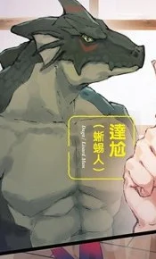
达冯
ダルフォン
魔族
0 次 ｜ 立绘 ↓

海芙利古塔
ヘメリタ
风龙族
0 次 ｜ 立绘 ↓

黑天鹅
ヒエン
0 次 ｜ 立绘 ↓

空
ソラ
0 次 ｜ 立绘 ↓

廓伦
ナンロン
龙族
0 次 ｜ 立绘 ↓

马克斯贝尔加克
マックスベルガー
神代龙族
0 次 ｜ 立绘 ↓

欧洁丝
オウルス
混代龙族
0 次 ｜ 立绘 ↓

托席菈
トレサ
混代龙族
0 次 ｜ 立绘 ↓
立绘与官方介绍（32341）
火乐
ヒラク
因长期与病魔斗争而丧命，但返老还童并转移到了异世界。他从神明那里得到“万能农具”和“健康的肉体”，开拓森林、建造农田和村庄。
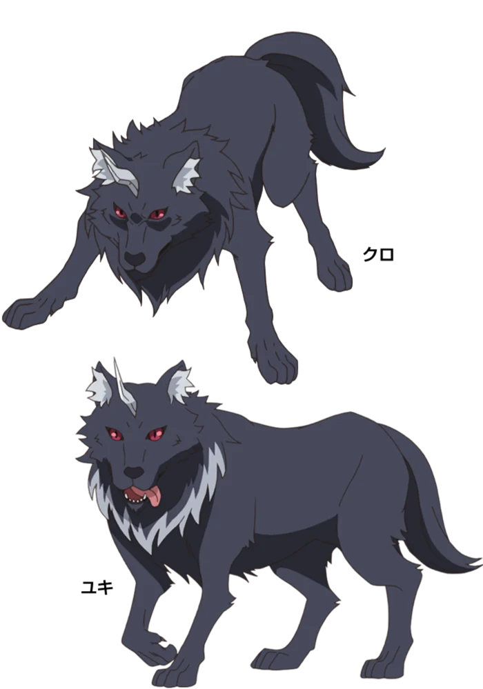
小黑 & 小雪
クロ・ユキ
小黑クロ
得到火乐帮助后，就此定居下来。虽然被火乐当成大狗，其实是被称为地狱狼的狼。
小雪ユキ
得到火乐帮助后，就此定居下来。虽然被火乐当成大狗，其实是被称为地狱狼的狼。
露
ルー
作为吸血鬼很有名的银发长发吸血鬼，能自由改变身体尺寸（年龄）。擅长魔法，也能飞行。最喜欢番茄。在森林中与火乐相遇，随后就这样共同生活。
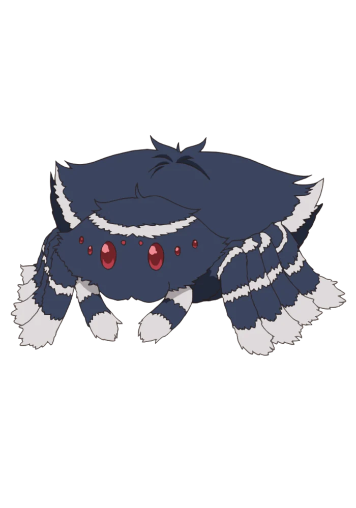
座布团
ザブトン
巨大的蜘蛛。村子的时尚大师。身体约有四张榻榻米大小，喜欢土豆。其实是恶魔蜘蛛。
精灵
リのつくエルフたち
高等精灵一族。与莉亚一起开始在火乐那里生活。
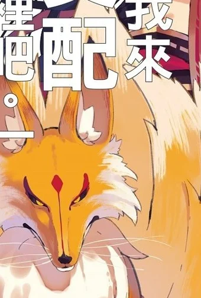
阳子
ヨウコ
住在森林深处的九尾狐，体型巨大，性格温和；与一重一起生活，常与村子往来。
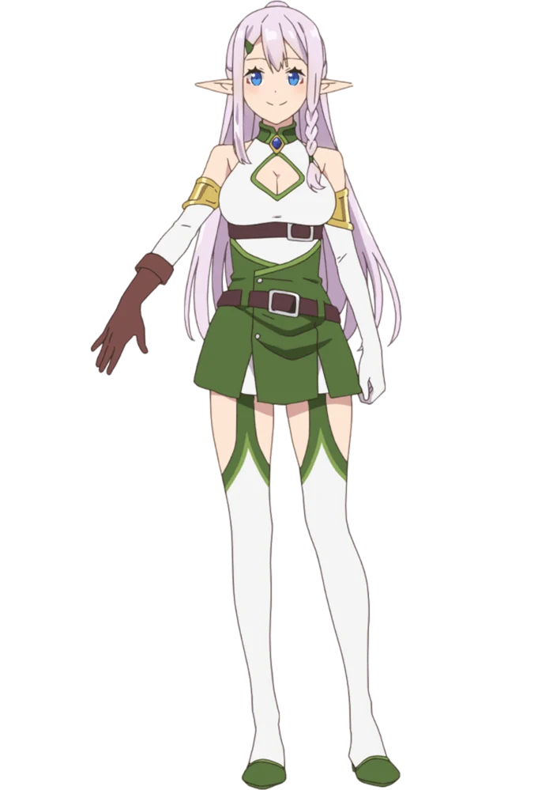
莉亚
リア
高等精灵的领袖。长期在森林中流浪，但与火乐他们相遇后一起生活。是可靠的、非常喜欢建筑的成员。
乌尔莎
ウルザ
神秘少女。
阿尔弗雷德（幼时形态）
アルフレート
街尾火乐与露露希=露之间出生的第一个孩子。村里第一个出生的孩子。
蒂洁尔
ティゼル
来源：文库版第 05 卷彩页（人名标签：蒂洁尔）。官方动画未出人设。
哈克莲
ハクレン
守门龙德莱姆的姐姐，也是拉斯蒂的伯母。听说侄女有了男朋友，便袭击村庄。被火乐击退后，就那样定居在村里。性格奔放开朗。喜欢喝酒。
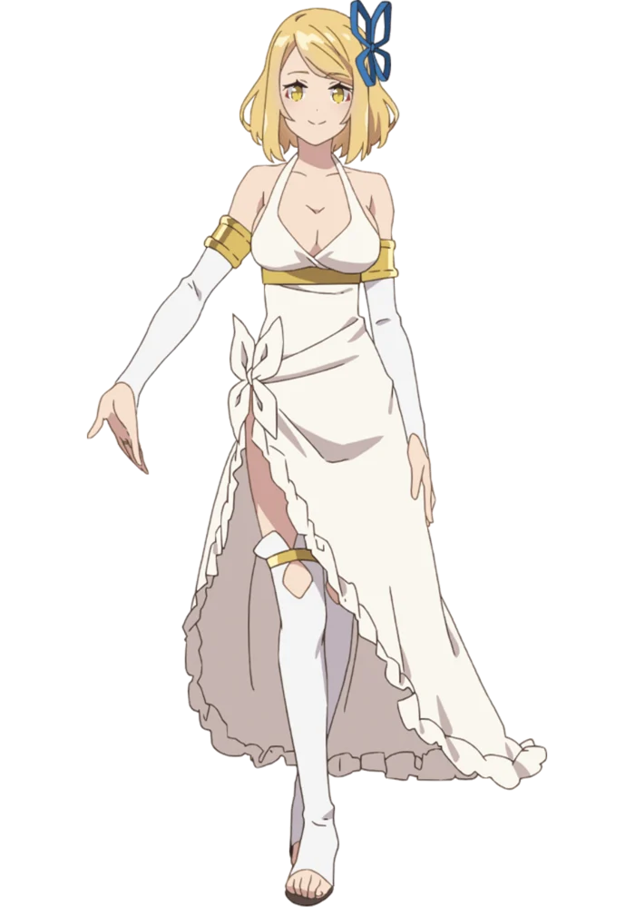
蒂雅
ティア
拥有“歼灭天使”称号的天使族。擅长操纵魔像的魔法。为追寻消失的露来到森林，并与火乐和露一起开始在森林生活。
伊雷
エレン
来源：文库版第 17 卷彩页（人名标签：艾莲）。官方动画未出人设。
格鲁夫
ガルフ
住在环绕火乐等人所在森林的山脉东侧、其中腹地的哈乌林村的居民。兽人族。哈乌林村战士们的领袖。为了问候与交易而造访火乐的村子。
比杰尔
ビーゼル
魔族。魔王国四天王之一。能使用转移魔法的外务大臣。为了调查火乐的村子而造访。对潜藏着压倒性战力的居民们感到惊讶。
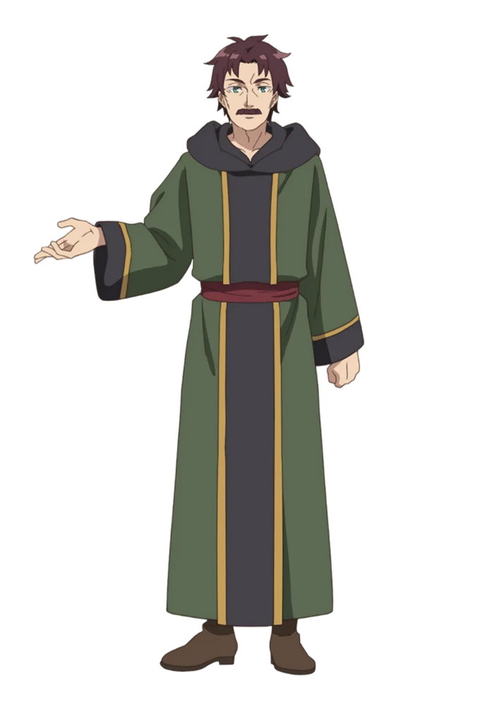
德斯
ドース
德莱姆他们的父亲，被称为北大陆的“龙王（皇帝龙）”。人类形态是绅士般的老人。
德莱姆
ドライム
被称为守门龙的龙。人形态是长发绅士。被食物和美酒的美味吸引，经常泡在大树村，被妻子怀疑有外遇。
贝尔
ベル＝フォーグマ
太阳城城主首席辅佐。墨丘利种的种族代表。
安
アン
曾侍奉露和芙萝拉的鬼人族女仆长。来到森林后，也照顾火乐他们。
戈尔
ゴール
来源：文库版第 09 卷彩页（人名标签：戈尔）。官方动画未出人设。
火一郎
ヒイロ
来源：文库版第 16 卷彩页（人名标签：火一郎）。官方动画未出人设。
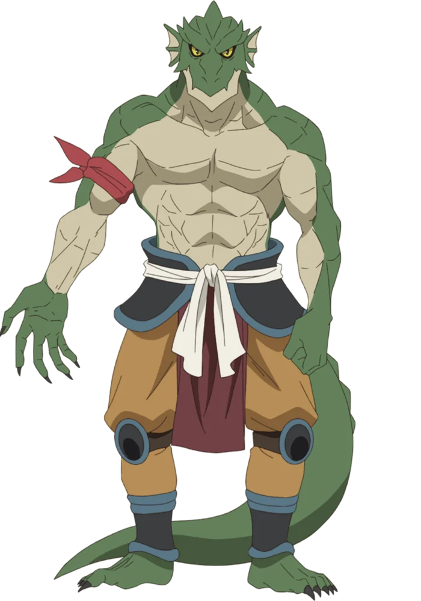
达尬
ダガ
蜥蜴人们的首领。受蒂雅邀请，与格兰玛莉亚等人一同移居到火乐他们那里。由于蜥蜴人仅凭外表难以分辨，只有达尬右臂缠着围巾。
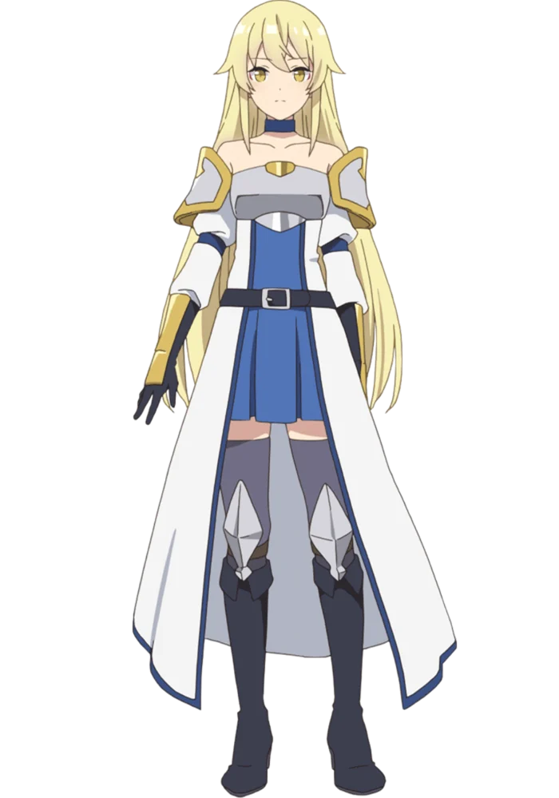
格兰玛莉亚
グランマリア
蒂雅的部下（同为天使族）。常与库德尔、科罗内两人一起行动，三人拥有“歼灭天使”的别名。工作是巡逻村子周围。
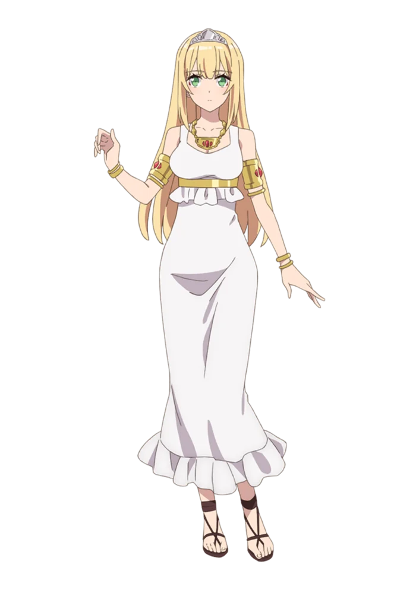
琪亚比特
キアービット
天使族之长的女儿。基本上既优秀又通情达理，但一旦涉及蒂雅就……
米优
ミュ
来源：文库版第 07 卷彩页（人名标签：米优）。官方动画未出人设。
古拉儿
グラール
来源：文库版第 04 卷彩页（人名标签：古拉儿）。官方动画未出人设。
古隆蒂
グランディ
来源：文库版第 11 卷彩页（人名标签：古兰蒂）。官方动画未出人设。
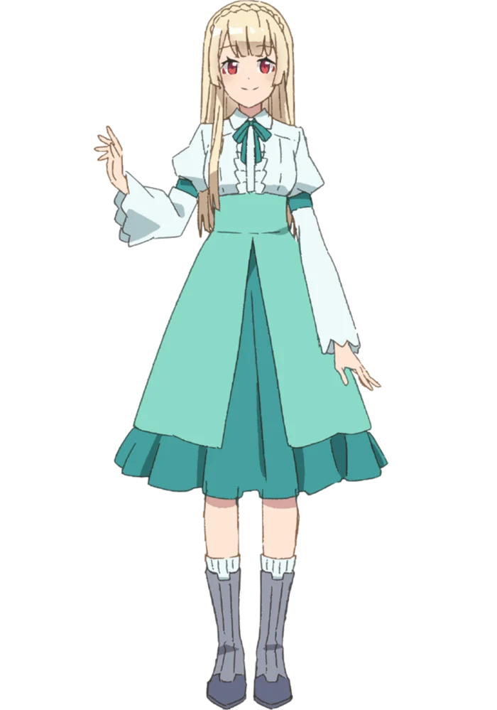
优莉
ユーリ
魔王的女儿，魔族。受亲信怂恿，试图进攻火乐的村庄。
毕莉卡
フリッカ・ウィンプ
来源：文库版第 07 卷彩页（人名标签：弗莉卡·温普）。官方动画未出人设。
普拉妲
プラダ
来源：文库版第 12 卷彩页（人名标签：普拉妲）。官方动画未出人设。
妖精女王
妖精女王
来源：文库版第 08 卷彩页（人名标签：妖精女王）。官方动画未出人设。
薇尔莎
ビビシャ
来源：文库版第 13 卷彩页（人名标签：薇薇莎）。官方动画未出人设。
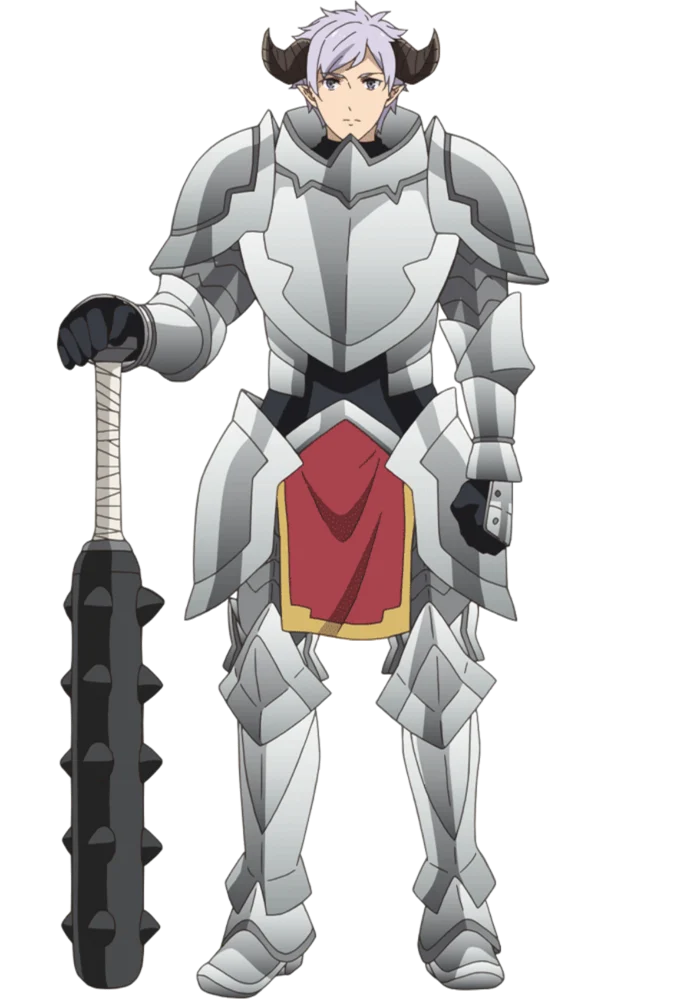
葛拉兹
グラッツ
魔王国四天王之一。米诺陶洛斯族的头脑派军师。
芙萝拉
フローラ
露表妹般的吸血鬼。为寻找不回来的露而来到火乐他们身边。也精通魔术，并擅长制药。
巨人族
巨人族
住在村子北方地下城的毛茸茸巨人。成年体的身体超过3米。
布隆
ブロン
来源：文库版第 09 卷彩页（人名标签：布隆）。官方动画未出人设。
古吉
グッチ
德莱姆的随从（恶魔族），青年绅士。为溜出宅邸、老是泡在大树村的主人而头疼。
席尔
クール
来源：文库版第 09 卷彩页（人名标签：库尔）。官方动画未出人设。
芙修
フーシュ
柯林教的大祭司之一，人类女性。拥有“恶辣芙修”这一异名。
伊丝莉
イリス
来源：文库版第 13 卷彩页（人名标签：伊莉丝）。官方动画未出人设。
莉芙 & 莉莉
リーフ・リリ
高等精灵族的双胞胎，与莉亚一同来到火乐的村子生活，日常负责村里的杂务与文书。
妮姿
ニーズ
来源：文库版第 10 卷彩页（人名标签：妮姿）。官方动画未出人设。
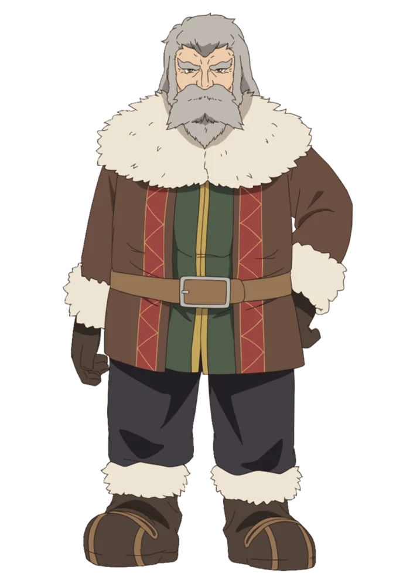
多诺邦
ドノバン
矮人。酿酒名匠兼酒豪。听说他在酿造美味酒（葡萄酒）的传闻后造访大树村，并就此定居。其实是名为长老矮人的矮人贵种，但本人并不太在意。
蓝登
ランダン
魔族。魔王国四天王之首。魔王国政务的关键人物。属于能做出冷静判断（所以会逃跑）的类型。
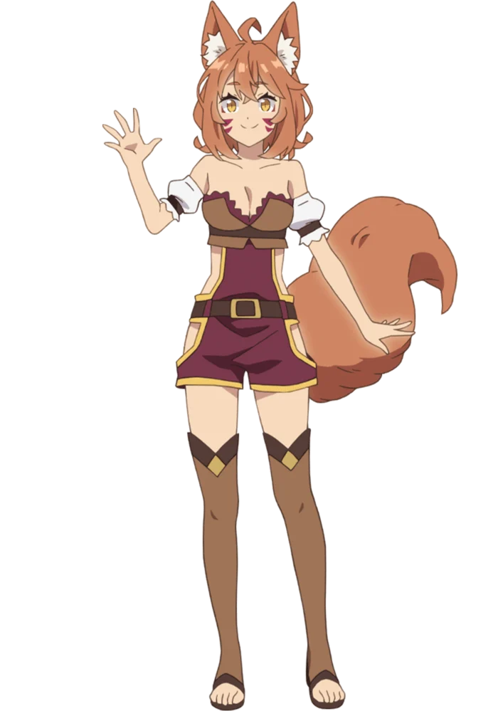
赛娜
セナ
兽人族的女孩。从哈乌林村移居到火乐的村庄。是哈乌林村村长的女儿，也是移居者的代表。
阿萨
アサ
来源：文库版第 07 卷彩页（人名标签：阿萨）。官方动画未出人设。
一重
ヒトエ
来源：文库版第 06 卷彩页（人名标签：一重）。官方动画未出人设。
芽
ヤー
山精灵的女儿。一族的领袖。长期生活在山岳地带，后来定居在火乐的村庄。性格认真，虽然憧憬恋爱却不擅长。擅长制作陷阱。
莉格涅
リグネ
来源：文库版第 15 卷彩页（人名标签：莉格涅）。官方动画未出人设。
苏尔萝
ソルロ
来源：文库版第 11 卷彩页（人名标签：苏尔萝）。官方动画未出人设。
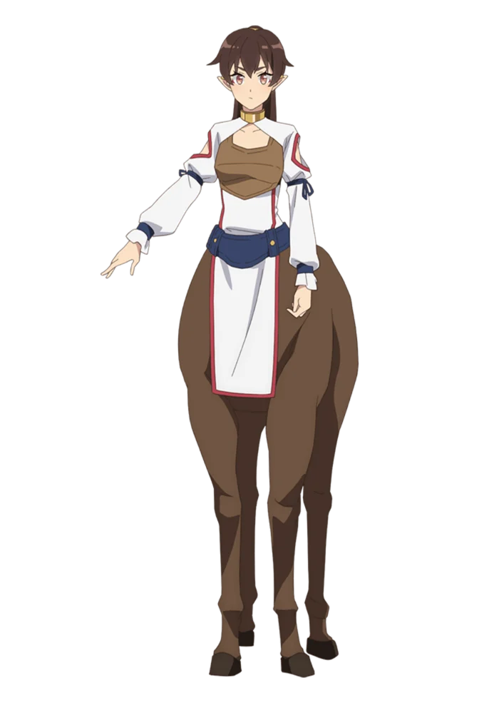
古露瓦尔德
グルーワルド
三之村村长代理兼半人马代表。比格子爵首席随从的亲属，女性。认真且责任感强。
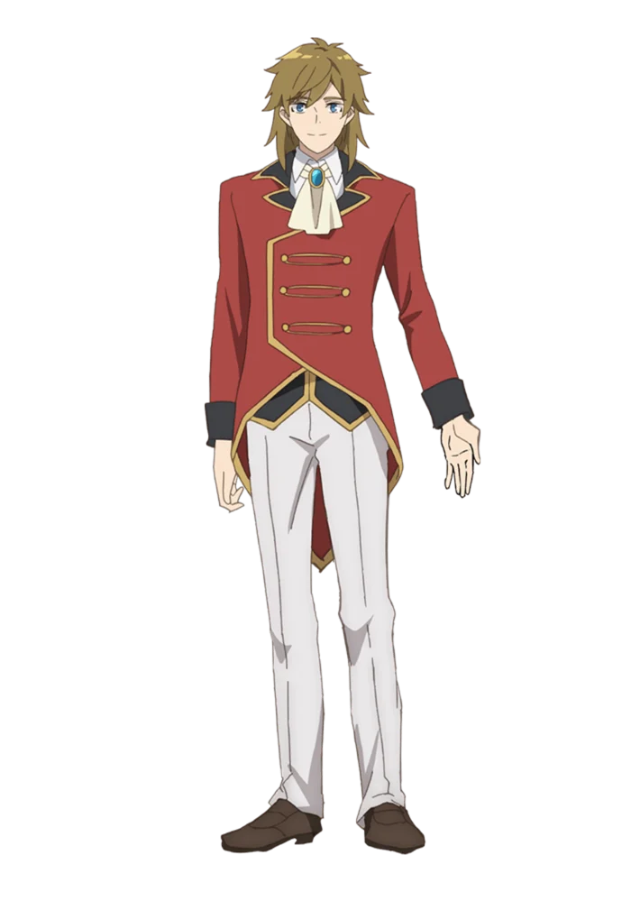
德麦姆
ドマイム
龙王德斯的儿子之一。哈克莲、德莱姆的弟弟。人类形态是俊美青年。稍微有些怯弱。
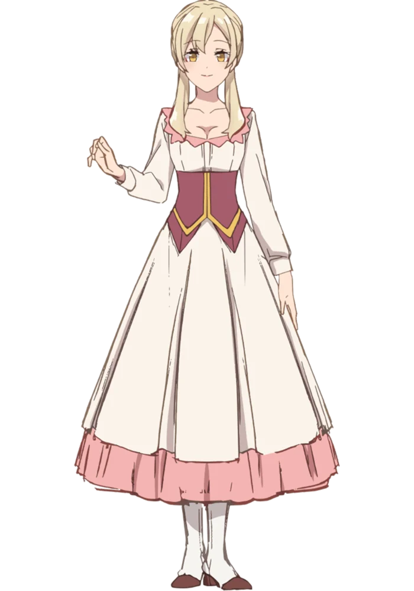
葛菈法伦
グラッファルーン
德莱姆的妻子，也是拉斯提的母亲。怀疑丈夫出轨，和女儿一起试图袭击村子，但被火乐击退。
荷
ホーレグ
来源：文库版第 04 卷彩页（人名标签：荷·雷格）。官方动画未出人设。
拉姆莉亚斯
ラムリアス
鬼人族的一员。与安一起照顾火乐他们。喜欢小孩。
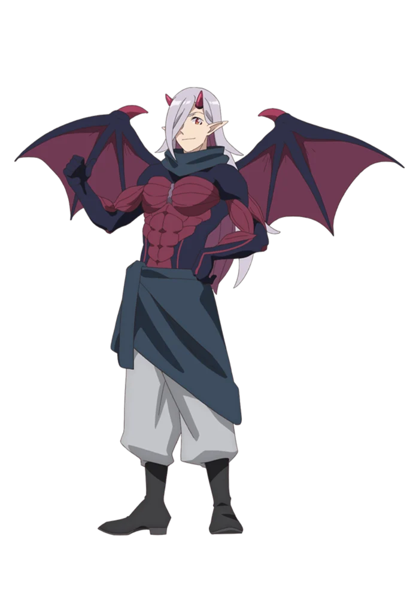
库兹汀
クズデン
曾祖父是约500年前占领太阳城的英雄库兹蓬的恶魔族男子。向大树村宣战……？
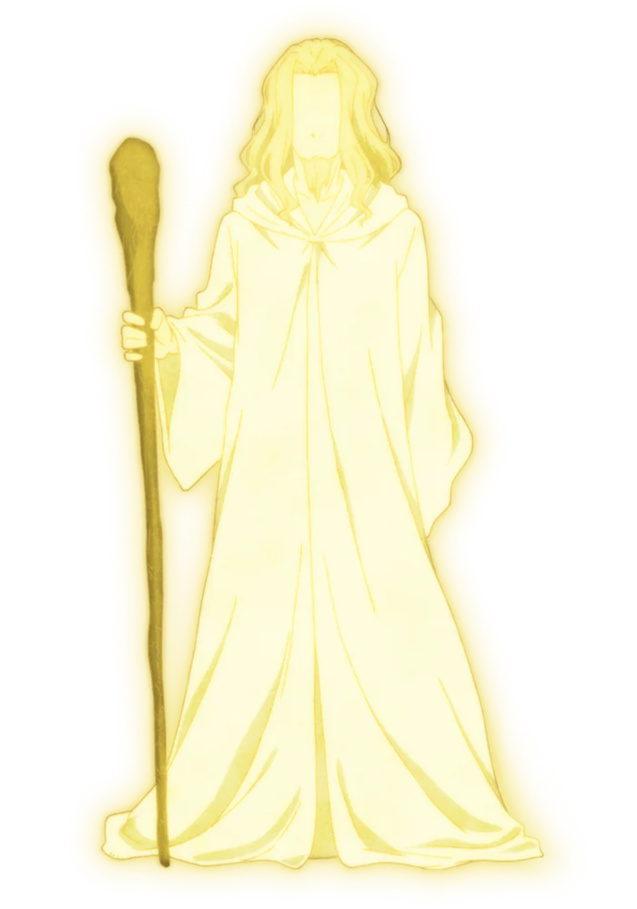
创造神
創造神
创造神是科林教当中最大派系所拜的神，该派系是科林教最大派系。
海赛儿
ヘイゼル
来源：文库版第 13 卷彩页（人名标签：海赛儿）。官方动画未出人设。
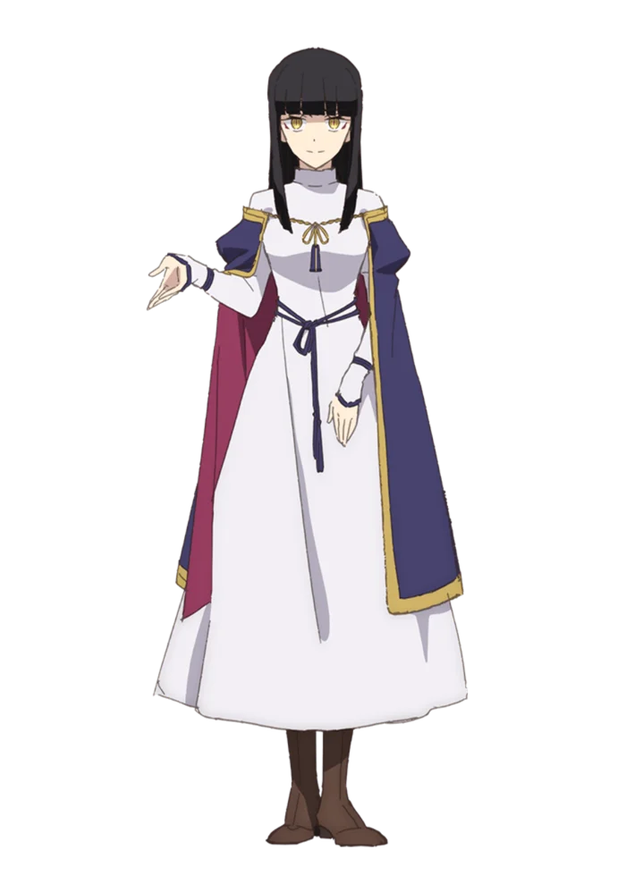
廓恩
クォン
希望与多迈姆结婚的龙族。认真而专一。稍微有点可怕。
萝娜娜
ロナーナ
牛头人女性之一。身高近2米，在牛头人中属于小个子。会给受伤的人处理伤口，是性格温柔、体贴的人。
苏尔蔻
ソルサ
来源：文库版第 04 卷彩页（人名标签：苏尔萨）。官方动画未出人设。
苏尔琉
ソルリュ
来源：文库版第 04 卷彩页（人名标签：苏尔琉）。官方动画未出人设。
齐天
セイテン
来源：文库版第 16 卷彩页（人名标签：齐天）。官方动画未出人设。
安德丽
アンドレ
来源：文库版第 11 卷彩页（人名标签：安德蕾）。官方动画未出人设。
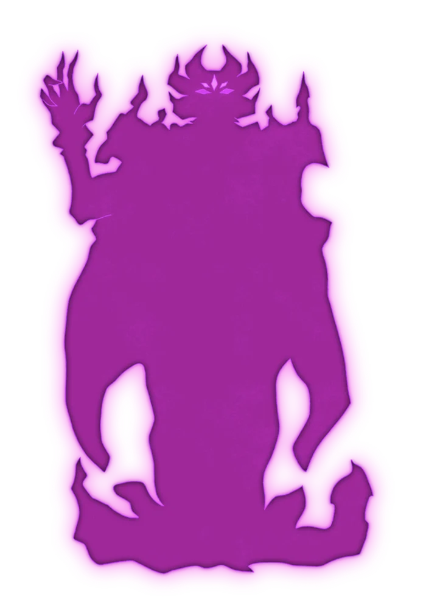
魔神
魔神
降临地上、司掌魔的神。
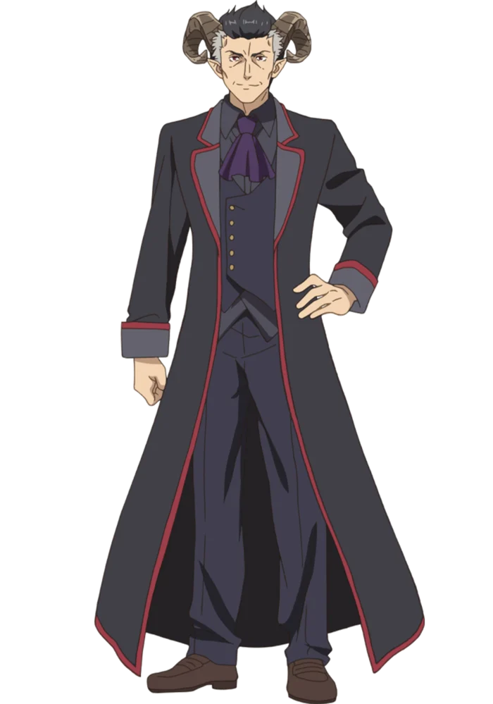
加尔加鲁
ガルガルド
加尔加尔德魔王国的国王。也就是魔王。一旦涉及女儿（尤莉），就会变成傻爸爸。
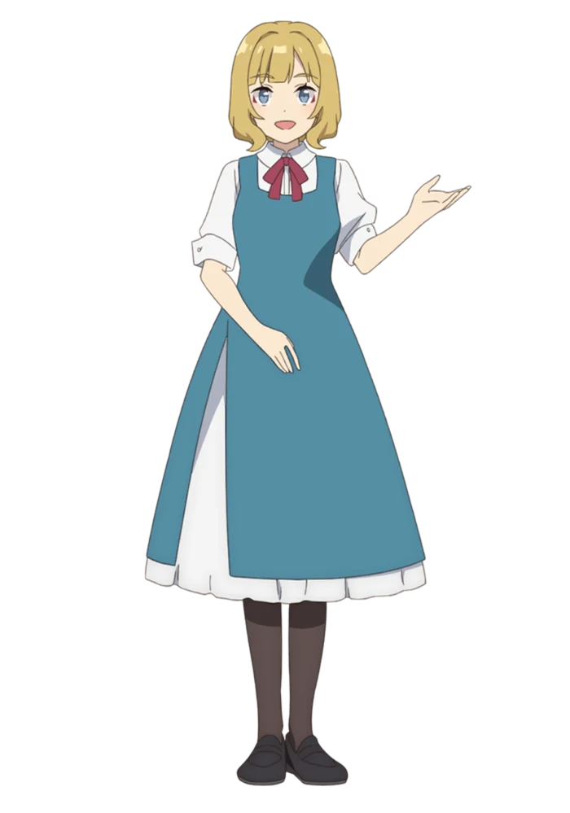
菈夏希
ラッシャーシ
德罗瓦伯爵家的次女，负责照顾半人马族。认真且很会照顾人。
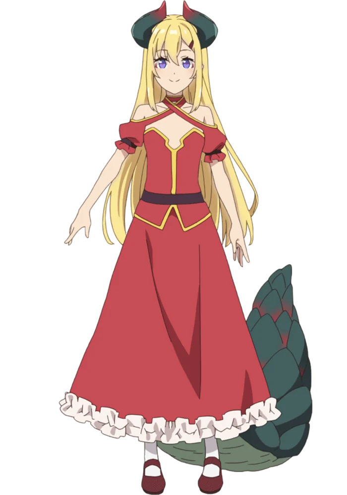
拉丝蒂
ラスティスムーン
守门龙德莱姆的女儿（龙族）。即使化为人形也有角和尾巴。外表虽是少女，（不愧为龙族）却是个大胃王。
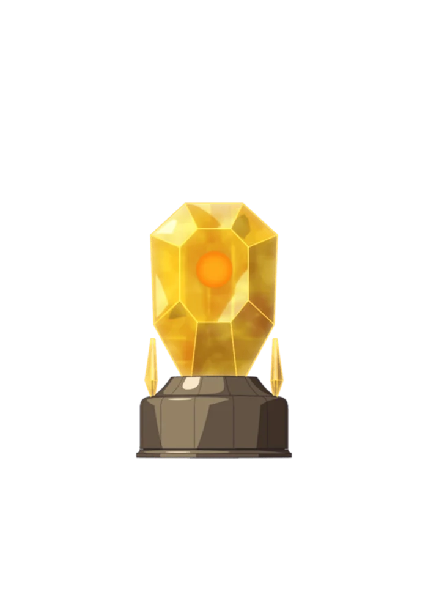
佛格马
フォーグマ
墨丘利种的一员。太阳城城主辅佐。为了节省不足的燃料，已将意识转移到水晶石中。
莉芙
リーフ
来源：文库版第 04 卷彩页（人名标签：莉芙）。官方动画未出人设。
莉婕 & 莉塔
リゼ・リタ
高等精灵族的双胞胎，与莉亚一同来到火乐的村子生活，日常负责村里的杂务与文书。
芙塔
フタ
来源：文库版第 07 卷彩页（人名标签：芙塔）。官方动画未出人设。
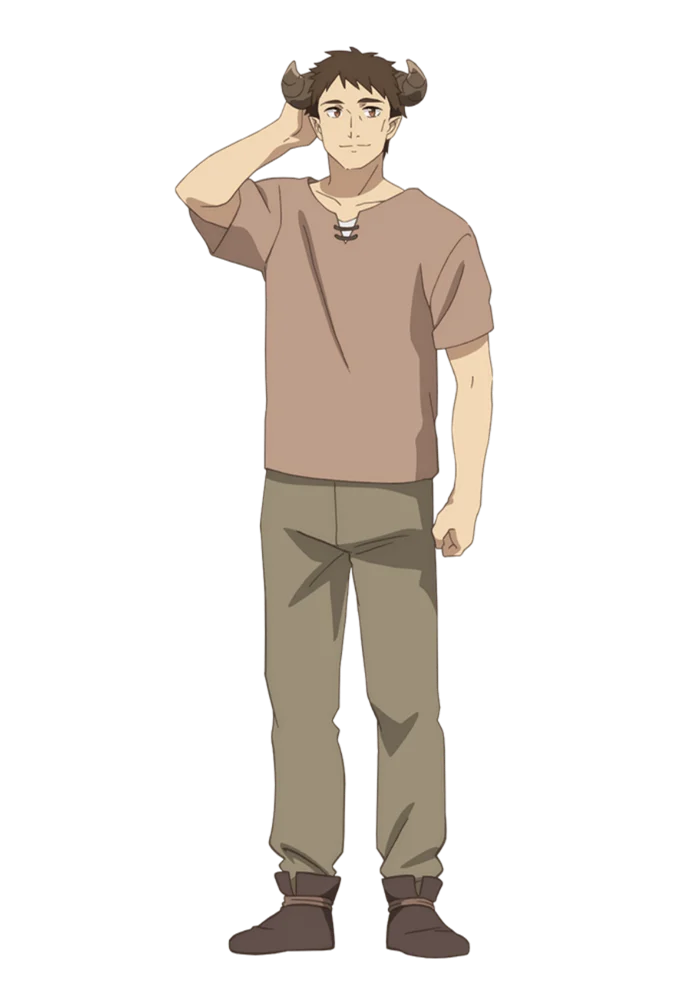
戈登
ゴードン
二之村村长代理兼牛头人代表。在牛头人中也是专精战斗的存在。作为可靠之人，作为种族代表，也作为村中实力者之一受到尊敬。
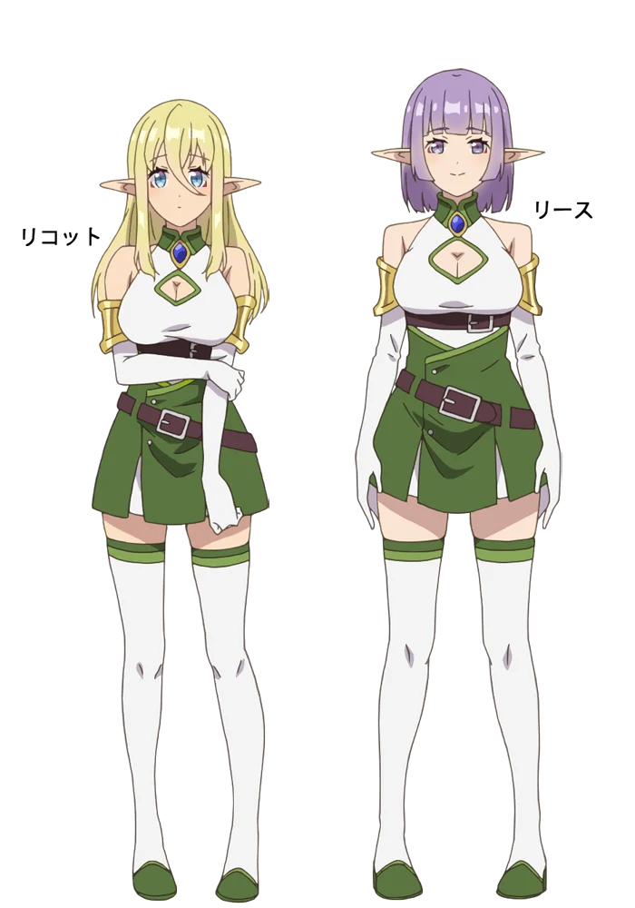
莉可特 & 莉丝
リコット・リース
高等精灵族的双胞胎，与莉亚一同来到火乐的村子生活，日常负责村里的杂务与文书。
芙劳蕾姆
フラウレム
魔王国四天王之一比杰尔的女儿。魔族。作为友好证明兼监视者从魔王国移居到村子。
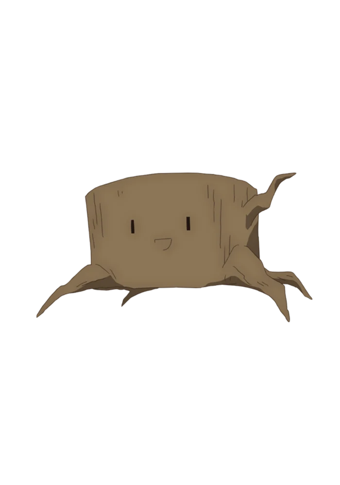
伊古
イグ
被视为接近树木精灵的纽纽达芙妮族的代表。能够变成人型，但基本上以树桩状态生活。
杰克 & 莫尔特
ジャック、モルテ
杰克ジャック
杰克是人类男性，是莫尔特的丈夫，也是一之村的人类代表。
莫尔特モルテ
官方未单独说明莫尔特的信息。
马姆
マム
与赛娜一同移居过来的兽人族，负责照顾纽纽达芙妮。别看外表，其实很可靠，在移居者中担任“照料人”。
琪莉莎娜
キリサナ
来源：文库版第 11 卷彩页（人名标签：琪莉莎娜）。官方动画未出人设。
姬哈特洛伊
ナハトロイ
来源：文库版第 15 卷彩页（人名标签：娜哈特洛伊）。官方动画未出人设。
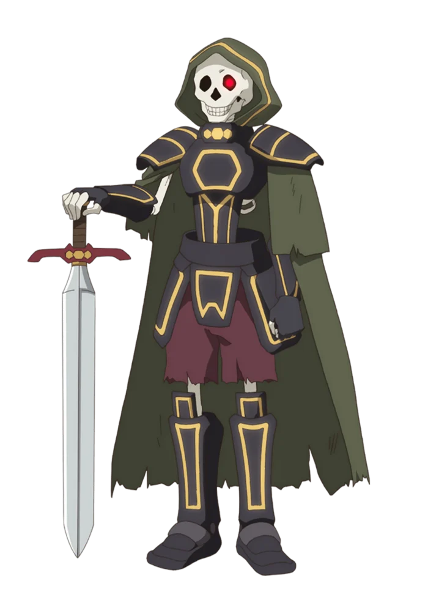
死灵王
死霊王
强大的不死者之王，拥有压倒性魔力的存在。为了解开某种封印而努力。
茱涅亚（半人蛇族（拉米亚））
ジュネア
南方地下城之主，拉米亚族族长的女性。最喜欢茄子。
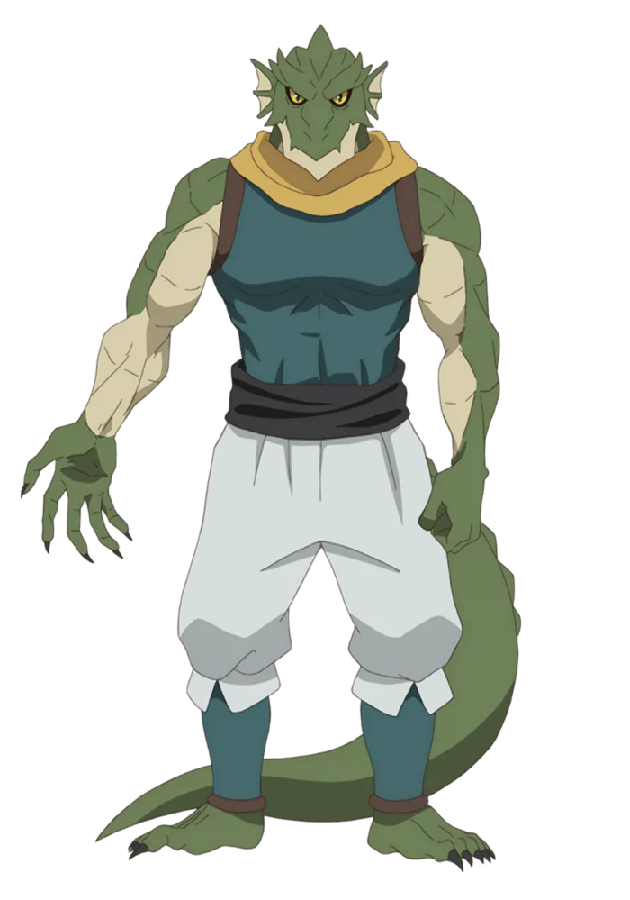
纳夫
ナーフ
与达尬一同移居过来的蜥蜴人。因为过去曾与牛头人有过交流，所以志愿担任二之村牛头人的照料人并被任命。
文官少女组
ロザリンド・ロアージュ・クラカッセ
萝莎琳德ロザリンド
她是魔王国的贵族千金，也是尤莉的亲信。弗劳雷姆把她和尤莉一起带到村里，尤莉回去后她仍留在村里，主要负责文书事务。
萝亚姬ロアージュ
她是魔王国的贵族千金，也是尤莉的亲信。弗劳雷姆把她和尤莉一起带到村里，尤莉回去后她仍留在村里，主要负责文书事务。
库菈卡瑟クラカッセ
她是魔王国的贵族千金，也是尤莉的亲信。弗劳雷姆把她和尤莉一起带到村里，尤莉回去后她仍留在村里，主要负责文书事务。
始祖
ヴァルグライフ
吸血鬼的始祖。太阳城的最高权力者，实力与地位都在众人之上。
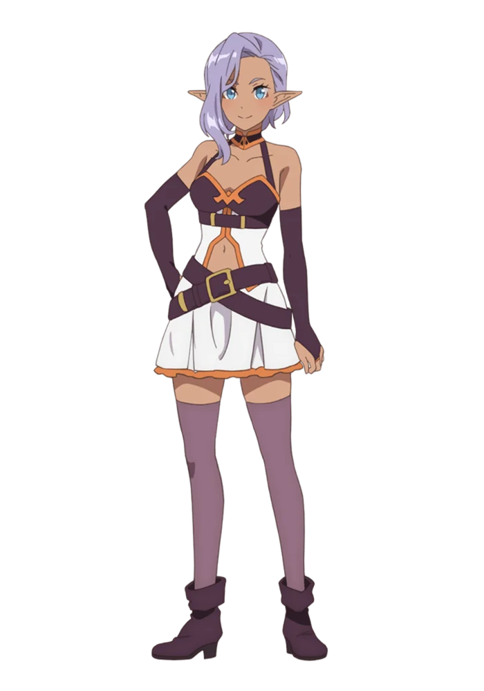
希德尔托
ヒテルトー
辅佐亚的山精灵。
阿蕾夏
アレクシア
来源：文库版第 11 卷彩页（人名标签：阿蕾夏）。官方动画未出人设。
艾基尔
エルザ
来源：文库版第 08 卷彩页（人名标签：艾露莎）。官方动画未出人设。
白天鹅
ハクチョウ
来源：文库版第 14 卷彩页（人名标签：白鸟）。官方动画未出人设。
达冯
ダルフォン
来源：文库版第 01 卷彩页（人名标签：达冯）。官方动画未出人设。
海芙利古塔
ヘメリタ
来源：文库版第 15 卷彩页（人名标签：海美莉塔）。官方动画未出人设。
黑天鹅
ヒエン
来源：文库版第 14 卷彩页（人名标签：飞燕）。官方动画未出人设。
空
ソラ
来源：文库版第 16 卷彩页（人名标签：空）。官方动画未出人设。
廓伦
ナンロン
来源：文库版第 13 卷彩页（人名标签：南伦）。官方动画未出人设。
马克斯贝尔加克
マックスベルガー
来源：文库版第 13 卷彩页（人名标签：马克斯贝尔加克）。官方动画未出人设。
欧洁丝
オウルス
来源：文库版第 15 卷彩页（人名标签：欧露斯）。官方动画未出人设。
托席菈
トレサ
来源：文库版第 12 卷彩页（人名标签：托蕾莎）。官方动画未出人设。
其他人物（258）
| 规范译名 | 种族 | 日文原文 | 出现次数 | 首次出现 |
|---|---|---|---|---|
| 魔王 | 魔族 | 魔王 | 2989 | 第36话 |
| 魔王是拥有势力范围的存在，该地点按势力范围在其势力范围内。 | ||||
| 阿尔 | 吸血鬼 | アル | 1680 | 第26话 |
| 阿尔是叙述者的儿子，名叫阿尔弗雷德，其名字由露取，叙述者提出的名字被否决。 | ||||
| 大树 | 树木 | 大樹 | 1289 | 第43话 |
| 大树在第1卷段落中是一条横向生长的粗大树根，主角挥锄时未感到反弹冲击。 | ||||
| 芙劳 | 魔族 | フラ | 1097 | 第3话 |
| 芙劳蕾姆是第1卷闲话中出现的名字，段落未给出其他身份信息。 | ||||
| 麦可 | 人类 | マイケル | 950 | 第61话 |
| 麦可是段落中被称为“麦可先生”的人物，与“飞龙通信与港镇”一同被提及。 | ||||
| 史提 | 古代恶魔族 | スティ | 812 | 第57话 |
| 史提在段落中仅以‘史提法诺’这一名字被提及，其他信息未说明。 | ||||
| 伊奇 | 地狱狼 | イチ | 713 | 第8话 |
| 伊奇在角色名单中标注为未登场，段落未提供其身份或种族信息。 | ||||
| 菈露 | 高等精灵 | ラル | 708 | 第34话 |
| 菈露在第1卷与菈法、菈莎、菈菈萨、菈米一同被列出。 | ||||
| 莱美莲 | 台风龙 | ライメイレン | 507 | 第69话 |
| 别名为“台风龙”的女性，居住在大树村，是德斯的配偶、哈克莲之母。 | ||||
| 雪 | 地狱狼 | ユキ | 451 | 第9话 |
| 雪在第1卷候选名单中写作“小雪”，名单还有小白、冰锥、霙。 | ||||
| 拉娜 | 神代龙族 | ラナ | 392 | 第12话 |
| 女孩子名叫拉娜农，由拉丝蒂命名，名字似乎取自拉丝蒂之母葛菈法伦那边的祖先名。 | ||||
| 玛尔比特 | 巫女 | マルビット | 374 | 第394话 |
| 天使族之长，居住大树村并负责统合村内天使族，有配偶与孩子琪亚比特，与小黑四是棋友。 | ||||
| 基拉尔 | 暗黑龙 | ギラル | 370 | 第158话 |
| 男性暗黑龙，位于大树之村，是古隆蒂的配偶、古拉儿的父；化龙时拥有六枚翼。 | ||||
| 艾基斯 | 凤凰族 | アイギス | 355 | 第330话 |
| 段落中仅出现名字艾基斯，未提供身份、种族或与主角关系的信息。 | ||||
| 梅雷欧 | 蜜蜂 | メレオ | 352 | 第205话 |
| 梅雷欧参与了繁殖交涉，希尔琪涅小姐店中部分美容品因此被转让给大树村。 | ||||
| 加特 | 兽人族 | ガット | 274 | 第137话 |
| 加特在段落中被介绍为好林村村长的儿子，是兽人族。 | ||||
| 琳夏 | ルィンシァ | 258 | 第394话 | |
| 担任大树村的辅佐长，负责辅佐玛尔比特，有配偶与孩子蒂雅，不擅长亲子对话但擅长翼对话。 | ||||
| 特莱因 | 鬼人族 | トライン | 229 | 第135话 |
| 鬼人族男孩，十一岁，母亲安，在魔王国王都学园就读，被琪亚比特盯上，名字由魔王所取。 | ||||
| 厄斯 | 人类 | アース | 218 | 第139话 |
| 厄斯在书中首次出现时以敝人自称并报出名字，段落未说明其身份、种族或与主角关系。 | ||||
| 欧尔 | 双头犬 | オル | 188 | 第19话 |
| 角色名欧尔，书中自述名字为莱塔斯・欧尔耶，出现于第10卷。 | ||||
| 布尔佳 | 古代恶魔族 | ブルガ | 182 | 第61话 |
| 女性，拥有慈爱权能，外表为女仆或执事，在大樹的村辅佐拉丝蒂并照顾库库尔坎。 | ||||
| 托吾 | トウ | 182 | 第8话 | |
| 男性城内船管理担当与万能船船长，活动于大树村或四村，负责万能船的管理。 | ||||
| 梅托菈 | 氷竜族 | メットーラ | 181 | 第526话 |
| 冰龙族女性，负责六龙神国的运营管理，是图西拉的姐姐，也是奇涅尔的配偶。 | ||||
| 亚梅 | 古代恶魔族 | ヤメ | 173 | 第1048话 |
| 亚梅是乌尔莎遇见的古代恶魔族女性，村中的古代恶魔族布尔佳似乎认识她。 | ||||
| 库德儿 | 引导员 | クーデル | 171 | 第43话 |
| 担任蒂雅的補佐并负责大樹之村上空警戒，为村長火乐之妻、拉拉迪尔之母。 | ||||
| 史蒂芬诺 | 古代恶魔族 | スティファノ | 160 | 第61话 |
| 女性，拥有恩爱权能，外表为女仆或执事，在大樹的村辅佐拉丝蒂并照顾库库尔坎。 | ||||
| 普加尔 | プギャル | 159 | 第72话 | |
| 普加尔在段落中以普加尔伯爵的身份出现，其四女被提及。 | ||||
| 纽纽达芙妮 | 纽纽达芙妮 | ニュニュダフネ | 155 | 第107话 |
| 纽纽达芙妮仅被提及说春天到了，段落未说明其身份、种族或与主角关系。 | ||||
| 宝菈 | 一号村女性 | ポーラ | 154 | 第216话 |
| 宝菈是在第5卷出现的角色，该段落中她自称是他的妻子。 | ||||
| 拉娜农 | 神代龙族 | ラナノーン | 151 | 第286话 |
| 神代龙族女孩，八岁，母亲为拉丝蒂丝姆，居住在大树村，名字取自葛菈法伦系祖先。 | ||||
| 小黑一 | 地狱狼 | クロイチ | 148 | 第9话 |
| 小黑一是只黑色的小狗，因是黑色的小狗而得此名。 | ||||
| 葛沃 | ゴウ | 140 | 第206话 | |
| 男性操舵长，在四村太阳城与贝尔一同辅佐城主，受四村居民依赖。 | ||||
| 可罗涅 | 魔像 | コローネ | 139 | 第43话 |
| 担任蒂雅的補佐并负责大樹之村上空警戒，为村長火乐之妻、托尔玛妮之母。 | ||||
| 马菈 | 矮人族 | マルーラ | 137 | 第229话 |
| 马菈是段落中被提议用来替代“马宝”的称呼，未说明其身份、种族或与主角的关系。 | ||||
| 娜特 | 小女孩 | ナート | 133 | 第137话 |
| 娜特是第3卷段落中提到的两人的小孩，身份是两人的孩子。 | ||||
| 瑞吉蕾芙 | 天使族 | レギンレイヴ | 131 | 第581话 |
| 天使族最长老，在大树村担任村长护卫，无配偶，姐姐是昔日地位高的天使族诗寇蒂。 | ||||
| 芙拉西亚 | 芙劳之女 | フラシア | 120 | 第250话 |
| 段落说明芙拉西亚是芙劳的女儿，未说明其种族或与主角关系。 | ||||
| 马可仕 | 人类 | マルコス | 120 | 第216话 |
| 第5卷中，马可仕以“我是马可仕”自报姓名，段落未给出其他身份信息。 | ||||
| 贝登 | 恶魔族 | ベトン | 118 | 第720话 |
| 女性，拥有病魔权能，外表像女商人，随鸠罗商队行动并作为其成员活动。 | ||||
| 米儿 | 猫族 | ミエル | 118 | 第262话 |
| 米儿是段落中被提议采用的名字之一，与拉儿、乌儿和加儿并列，未说明其身份或种族。 | ||||
| 利留斯 | 高等精灵 | リリウス | 115 | 第135话 |
| 高等精灵男孩，十一岁，母亲莉亚，居住于大树村与五村。 | ||||
| 露露西 | 吸血鬼 | ルールーシー | 111 | 第24话 |
| 露露西是吸血鬼，段落中给出的全名为露露西・露。 | ||||
| 普加尔伯爵 | プギャル伯爵 | 111 | 第72话 | |
| 普加尔伯爵是伯爵，段落中提及其四女，未提及其他身份。 | ||||
| 加雷特 | ガーレット | 102 | 第126话 | |
| 加雷特在初次出现段落中被介绍为加雷特王国的巫女。 | ||||
| 小黑四 | クロヨン | 102 | 第9话 | |
| 小黑四是一只黑色的小狗，因毛色被取名为小黑四。 | ||||
| 珠儿 | 宝石猫 | ジュエル | 99 | 第262话 |
| 珠儿是书中的宝石猫，鬼人族女仆们私下这样称呼它。 | ||||
| 哈奇 | 地狱狼 | ハチ | 96 | 第22话 |
| 哈奇在角色名单中标注为未登场，段落未提供其他身份或种族信息。 | ||||
| 娜娜 | 地狱狼 | ナナ | 94 | 第22话 |
| 女性信息长，在五村负责情报收集，作为阳子的部下与警备队合作开展防犯工作。 | ||||
| 菈兹玛莉 | 天使族 | ラズマリア | 91 | 第493话 |
| 大樹之村天使族穏健派，担任玛尔比特的補佐，有配偶和子格兰玛莉亚，并照顾库德儿、可罗涅。 | ||||
| 埃卡缇莉洁 | エカテリーゼ | 90 | 第801话 | |
| 段落中自报名字为埃卡缇莉洁，未说明其身份、种族或与主角的关系。 | ||||
| 赛特 | 兽人族 | セット | 88 | 第16话 |
| 兽人族男性，母亲为塞娜，居住在大树村，说明栏列有妊娠确认与预定事项。 | ||||
| 奥萝拉 | 天使族 | オーロラ | 87 | 第379话 |
| 天使族女孩，六岁，母亲为蒂雅，居住在大树村。 | ||||
| 爱梅 | 女仆 | エルメ | 86 | 第623话 |
| 女性，外表为女仆，住在五村，担任薇尔莎＝米拉＝特兰西瓦的女仆。 | ||||
| 戈德雷克 | ゴドレイク | 86 | 第1019话 | |
| 段落仅提到‘戈德雷克伯爵家的佛卡小姐’，未说明戈德雷克本人的身份、种族或与主角关系。 | ||||
| 希尔琪涅 | 母亲 | シルキーネ | 86 | 第260话 |
| 希尔琪涅自我介绍说，她是芙劳蕾姆的妈妈。 | ||||
| 戈德雷克伯爵 | ゴドレイク伯爵 | 85 | 第1019话 | |
| 段落提到佛卡是戈德雷克伯爵家的小姐，未给出戈德雷克伯爵其他身份信息。 | ||||
| 丝依莲 | 魔龙 | スイレン | 84 | 第69话 |
| 别名为“魔龙”的女性，住在贝尔加克领地，是其配偶并育有赫尔泽尔纳克。 | ||||
| 瑟蕾丝 | 人类 | セレス | 82 | 第303话 |
| 第七卷“闲话”中出现瑟蕾丝汀・罗金，段落未说明其身份。 | ||||
| 希伊 | ヒー | 81 | 第56话 | |
| 男性，中年轻战士，任五村警备主任与城内警备主任，作为阳子的部下在五村执行警备工作。 | ||||
| 艾斯 | 冰魔物 | アイス | 74 | 第64话 |
| 只出现名字艾斯，没有说明其身份、种族或与主角的关系。 | ||||
| 莱基耶尔 | 猫族 | ライギエル | 74 | 第362话 |
| 莱基耶尔是书中第8卷出现的一名角色，目前只知这个名字。 | ||||
| 马龙 | 矮人族 | マーロン | 74 | 第222话 |
| 马龙是段落中说话者所称的儿子，段落未说明其他身份、种族或与主角的关系。 | ||||
| 克莉姆 | 神明 | クリム | 68 | 第957话 |
| 权能为【希望】的【绝望】之女，约五岁，着浴衣扎马尾，住温泉地，仍在学习并吸收一号机齐格飞。 | ||||
| 贝尔加克 | 恶龙 | マークスベルガーク | 67 | 第69话 |
| 别名为“恶龙”的男性，居住于人间之国，配偶是丝依莲，子为赫尔泽尔纳克。 | ||||
| 洛克 | 哥洛克族 | ロク | 67 | 第22话 |
| 男性公务秘书，担任五村文官笔头，作为阳子的部下工作，并介意自己存在感低。 | ||||
| 齐格 | 机动重机 | ジークフリート | 67 | 第941话 |
| 第20卷段落提到‘它’的名字是齐格飞，未说明其身份或种族。 | ||||
| 统一王 | 統一王 | 67 | 第998话 | |
| 统一王是从这些领王之中选出的凯尔兰德地区之王。 | ||||
| 苍月 | ソウゲツ | 64 | 第596话 | |
| 苍月是第13卷第3节“苍月”中出现的角色，段落未提供更多身份信息。 | ||||
| 火华琉 | 神代龙族 | ヒカル | 62 | 第628话 |
| 神代龙族男性，母亲为哈克莲，与火御子为双胞胎，于十七年目冬出生，居住在大樹之村。 | ||||
| 阿拉克涅 | 阿拉克涅 | アラクネ | 60 | 第272话 |
| 名为阿拉克涅的角色说话尚不够流畅，但表达正逐渐变好。 | ||||
| 库库尔坎 | 神代龙族 | ククルカン | 60 | 第643话 |
| 神代龙族男性，母亲为拉丝蒂丝姆，于十八年目春出生，居住在大樹之村，喜欢飞毯。 | ||||
| 火御子 | 神代龙族 | ヒミコ | 59 | 第628话 |
| 神代龙族女性，母亲为哈克莲，与火华琉为双胞胎，于十七年目冬出生，居住在大樹之村。 | ||||
| 拉丝蒂丝姆 | 狂龙 | ラスティスムーン | 58 | 第57话 |
| 拉丝蒂丝姆别名狂龙，女性，任大树村外交担当并居该村，配偶村长火乐，子拉娜农。 | ||||
| 佛卡 | フォカ | 56 | 第1019话 | |
| 佛卡是戈德雷克伯爵家的小姐，在进入房间前察觉问题意图后逃跑。 | ||||
| 赤铁骑士 | 赤鉄騎士 | 51 | 第482话 | |
| 人类国家中与白银骑士、青铜骑士同属三骑士之一的赤铁骑士。 | ||||
| 布莱克瑞弗 | ブラックリバー | 50 | 第1088话 | |
| 布莱克瑞弗伯爵夫人是布莱克瑞弗伯爵的妻子，第1088话初次登场，忙于政务和社交。 | ||||
| 利格尔 | 高等精灵 | リグル | 50 | 第135话 |
| 高等精灵男孩，十一岁，母亲莉婕，居住于大树村与五村。 | ||||
| 欧洁斯 | 炎竜族 | オージェス | 50 | 第431话 |
| 女性炎龙族，棒球打击王，在魔王国或六龙神国帮忙打工任助援；叔母为欧塔特、欧瓦梅亚。 | ||||
| 奇涅尔 | （未公表） | ギィーネル | 50 | 第866话 |
| 男性，种族未公布，担任六龙神国的王，配偶是梅托菈。 | ||||
| 赛琪莲 | 火焰龙 | セキレン | 50 | 第69话 |
| 赛琪莲别名火炎龙，女性，居于库伦的縄張り，配偶为库伦，村長曾撮合她与库伦。 | ||||
| 埃普里 | 受罚者 | エイプリー | 49 | 第929话 |
| 艾普利是原古代王国执政官，男性，在沙沙特街辅佐米约，有一定战斗能力且适合内政。 | ||||
| 拉提 | 高等精灵 | ラテ | 48 | 第135话 |
| 高等精灵男孩，十一岁，母亲菈法，居住于大树村与五村。 | ||||
| 库伦 | 神代龙族 | クォルン | 46 | 第114话 |
| 库伦是男性，居于库伦的縄張り，配偶为赛琪莲，异名未出。 | ||||
| 菈法 | 黑暗精灵 | ラファ | 46 | 第34话 |
| 菈法是第1卷中自报姓名“我名叫菈法”的一名角色。 | ||||
| 娜西 | 妻子 | ナーシィ | 44 | 第137话 |
| 娜西在段落中被称作“其妻”，仅能确定她以妻子身份被提及。 | ||||
| 黎德莉 | リドリー | 43 | 第532话 | |
| 第11卷提到的角色名为黎德莉・贝卡玛卡，全名由此可知。 | ||||
| 萝洁玛莉亚 | 天使族 | ローゼマリア | 42 | 第469话 |
| 天使族女孩，五岁，母亲为格兰玛莉亚，居住在大树村。 | ||||
| 奇辛里 | キッシンリー | 42 | 第928话 | |
| 基辛利是王国执政官计划制造的人工生命体，为超越福格玛而造，最终得到较温和的性能。 | ||||
| 青铜骑士 | 青銅騎士 | 42 | 第482话 | |
| 人类国家中与白银骑士、赤铁骑士同属三骑士之一的青铜骑士。 | ||||
| 露普米莉娜 | 吸血鬼 | ルプミリナ | 41 | 第379话 |
| 吸血鬼女孩，六岁，母亲为露，居住在大树村。 | ||||
| 奥杰塔 | 白天鹅 | オデット | 39 | 第839话 |
| 在第十八卷中，段落说明白天鹅的名字是奥杰塔。 | ||||
| 加藤 | 恶魔族 | カトウ | 39 | 第992话 |
| 第21卷中出现的名字为‘风魔・加藤’，段落未说明其身份、种族或与主角的关系。 | ||||
| 农业神 | 神明 | 農業神 | 39 | 第118话 |
| 农业神是硬币一面雕刻的、在神社里供奉的农业神明大人。 | ||||
| 赛缇 | 兽人族 | セッテ | 39 | 第158话 |
| 兽人族女孩，八岁，母亲为赛娜，居住在大树村。 | ||||
| 树王 | 精灵 | 樹王 | 39 | 第314话 |
| 树王是戈恩森林的树王，曾被他人提及并疑似被认出。 | ||||
| 贺莉 | ホリー | 38 | 第243话 | |
| 第6卷中被提到；有人担心她若过来，王都的房子会出问题。 | ||||
| 凯尔兰德 | 地区名 | ケイルランド | 38 | 第997话 |
| 凯尔兰德地区在段落中被说明为我国所称的凯尔兰德地区。 | ||||
| 弓王 | 精灵 | 弓王 | 37 | 第314话 |
| 弓王是加雷茨森林的弓王，曾被他人提及并疑似被认出。 | ||||
| 赫尔泽尔纳克 | 神代龙族 | ヘルゼルナーク | 37 | 第69话 |
| 赫尔泽尔纳克是马克斯贝尔加克的女儿，她盯上了火华琉，妨碍她会被记恨。 | ||||
| 黑尔洁尔纳克 | 神代龙族 | ヘルゼルナーク | 37 | 第69话 |
| 别名为“暴龙”的女性，居住在大树村，自觉与哈克莲的次子火华琉有命运联系。 | ||||
| 奥布莱耶 | 神官战士长 | オブライエン | 36 | 第165话 |
| 段落中仅出现名字奥布莱耶，未提供身份、种族或与主角关系的信息。 | ||||
| 戈德雷克伯爵夫人 | ゴドレイク伯爵夫人 | 36 | 第1085话 | |
| 戈德雷克伯爵的妻子，以总待在领地不露脸出名，此次离开领地问候阿尔弗雷德少爷。 | ||||
| 葛德米利翁 | 少爷 | ゴッドミリオン | 36 | 第678话 |
| 葛德米利翁是戈德巴克家当家老爷下令由人侍奉的少爷。 | ||||
| 山月 | 圣兽 | サンゲツ | 36 | 第595话 |
| 山月是书中出现的圣兽，其称呼为“圣兽山月”。 | ||||
| 狮子一家 | 魔物 | ライオン一家 | 35 | 第209话 |
| 狮子一家对惊讶的叙述者点头示意，随后飞往温泉地。 | ||||
| 奥吉莉亚 | 黑天鹅 | オディール | 34 | 第839话 |
| 在第十八卷中，段落说明黑天鹅的名字是奥吉莉亚。 | ||||
| 拉面女王 | 音乐家 | ラーメン女王 | 34 | 第629话 |
| 拉面女王是上级七段，对话中有人提到她并说路还很长。 | ||||
| 雷格 | 财务 | レグ | 34 | 第129话 |
| 雷格是负责财务的人物，段落中其全名为荷・雷格。 | ||||
| 阿修罗 | 骸骨 | アシュラ | 32 | 第786话 |
| 段落中有人先猜测其与阿修罗有关，随即否定，并称其为骸骨。 | ||||
| 比婆 | ビー婆 | 32 | 第900话 | |
| 比婆是书中某人的笔名，使用者被称作奶奶大人。 | ||||
| 比婆婆 | 吸血鬼 | ビー婆 | 32 | 第900话 |
| 比婆婆是书中出现的人物，并表示称呼自己为比婆婆就好。 | ||||
| 米凯尔 | ミケル | 32 | 第1010话 | |
| 米凯尔是芙修小姐的儿子，段落提到他在叙述者身后。 | ||||
| 柯琳 | コリン | 31 | 第880话 | |
| 柯琳在段落中自称柯琳柯琳・露萨鲁思，未提供其他信息。 | ||||
| 正行 | 后宫男 | マサユキ | 31 | 第27话 |
| 正行在第1卷首次出现时仅以名字被提及，没有其他说明。 | ||||
| 姬涅丝塔 | 精灵皇族 | キネスタ | 30 | 第377话 |
| 姬涅丝塔是精灵帝国皇帝的女儿，拥有皇族地位。 | ||||
| 瓦特冈古 | ワトガング | 30 | 第523话 | |
| 瓦特冈古在第11卷的闲话部分出现，段落未给出其身份、种族或关系信息。 | ||||
| 鸠罗 | ジョロー | 28 | 第692话 | |
| 鸠罗在第15卷段落中仅出现在“鸠罗商队 前篇”标题里，未提供身份信息。 | ||||
| 拉拉迪尔 | 天使族 | ララーデル | 28 | 第575话 |
| 天使族女孩，三岁，母亲为库德儿，居住在大树村。 | ||||
| 白银骑士 | 白銀騎士 | 27 | 第482话 | |
| 人类国家中与青铜骑士、赤铁骑士同属三骑士之一的白银骑士。 | ||||
| 丹妲基 | 冰龙族 | ダンダジィ | 27 | 第433话 |
| 丹妲基出现在“你们三个赢得了丹妲基吗”的问话中，身份未说明。 | ||||
| 希尔博希尔克 | シルバーシルク | 27 | 第1018话 | |
| 潘娜可雅・希尔博希尔克是雷怀特王国希尔博希尔克伯爵家的长女，今年十五岁。 | ||||
| 艾琳 | アイリーン | 25 | 第385话 | |
| 艾琳出现在第9卷闲话《兽人族男孩们的学园生活 夏》中。 | ||||
| 贝尔巴克 | 魔族 | ベルバーク | 25 | 第813话 |
| 贝尔巴克是第17卷“闲话 贝尔巴克的旅程 前篇”中出现的角色。 | ||||
| 海芙利 | 风龙族 | ハイフリーグータ | 25 | 第431话 |
| 风龙族女性，在六龙神国帮忙并在魔王国打工，同时担任棒球助援，是海芙利尼尔斯的姨母。 | ||||
| 赫尔兰 | ホルラン | 25 | 第874话 | |
| 角色名赫尔兰，书中对话称“就是赫尔兰”，出现于第19卷。 | ||||
| 露露西・露 | 吸血鬼 | ルシデル | 25 | 第874话 |
| 角色名露露西・露，身为吸血鬼，全名为露露西・露，出现于第1卷。 | ||||
| 托尔玛妮 | 天使族 | トルマーネ | 25 | 第575话 |
| 天使族女性，母亲为可罗涅，于十七年目秋出生，居住在大樹之村。 | ||||
| 克洛姆伯爵夫人 | クローム伯爵夫人 | 24 | 第880话 | |
| 克洛姆伯爵夫人即现在的希尔琪涅大人，与说话者婚前就认识并邀请说话者。 | ||||
| 葛拉兹将军 | 魔族 | グラッツ将軍 | 23 | 第216话 |
| 魔王国四天王之一，葛拉兹将军出现在我眼前。 | ||||
| 拉格霍 | 魔族 | ラングホー | 23 | 第874话 |
| 角色名拉格霍，书中自述名字为拉格霍，出现于第19卷。 | ||||
| 五君 | ファイブくん | 23 | 第630话 | |
| 角色名五君，书中出现时被称为五君，出现于第7卷。 | ||||
| 玛阿 | 山精灵 | マア | 22 | 第812话 |
| 玛阿是山精灵，与“我”一起来到学园，目前和“我”住在这个家。 | ||||
| 玛特 | マテ | 22 | 第1088话 | |
| 玛特是戈德雷克伯爵夫人，住在隔壁，曾向布莱克瑞弗伯爵夫人提起阿尔弗雷德少爷美容品店铺。 | ||||
| 莎尔柯娜 | 天使族 | コナ | 22 | 第1037话 |
| 莎尔柯娜是苏尔蔻的女儿，也是苏尔萝重要的孙女之一，与莎尔丽娜同为婴儿。 | ||||
| 伊莱莎 | 代理代表 | エライザ | 22 | 第987话 |
| 第21卷中提到其名叫伊莱莎，段落未给出其他身份或关系信息。 | ||||
| 风魔 | フウマ | 21 | 第992话 | |
| 该名仅出现在“冰风魔道具”一词中，段落未说明其身份、种族或与主角关系。 | ||||
| 伊凡 | イバン | 21 | 第591话 | |
| 伊凡是用木头做的对话用人偶，不会说话，是叙述者聊天和发誓的对象。 | ||||
| 戴达罗斯 | 防卫炮 | ダイダロス | 20 | 第934话 |
| 戴达罗斯是武器名称，被称为《全天候型据点防卫炮戴达罗斯》。 | ||||
| 图西拉 | 氷竜族 | トーシーラ | 20 | 第883话 |
| 冰龙族女性，在莱美莲的领地担任其辅佐，是梅托菈的妹妹。 | ||||
| 蒂蒂特 | 山精灵族 | テテト | 19 | 第1039话 |
| 蒂蒂特是乌尔莎带来的山精灵，带领因粮食问题流浪的一族，后与乌尔莎集团相遇。 | ||||
| 格里奇 | グリッチ | 19 | 第72话 | |
| 格里奇是格里奇伯爵的次女，同时也是普加尔伯爵的四女。 | ||||
| 柯娜王妃 | コナ王妃 | 19 | 第1088话 | |
| 柯娜王妃是王妃，之前有某件事使他人记恨，文中提到不论派系都宣誓效忠王家。 | ||||
| 波罗 | ポロ | 18 | 第189话 | |
| 芙卡・波罗是魔王国男爵，他表示感谢对方愿意收留他们。 | ||||
| 基思卡尔 | ギスカール | 18 | 第374话 | |
| 第20卷中有一位代表自称基思卡尔，名字由此被提及。 | ||||
| 洛比亚 | 魔族 | ロビア | 18 | 第385话 |
| 洛比亚是魔族，擅长魔法，并且是席尔的配偶之一。 | ||||
| 艾基多 | 蛇人族 | エキド | 15 | 第980话 |
| 艾基多是妮姿的老朋友，自称因自己的过失引发骚动并为此道歉。 | ||||
| 芙拉西亚贝儿 | 魔族 | フラシアベル | 15 | 第250话 |
| 魔族女孩，九岁，母亲芙劳蕾姆（比杰尔的女儿），居住于大树村，喜欢胖肚子。 | ||||
| 黑黑 | 黒黒 | 15 | 第865话 | |
| 乌尔莎小姐否决后，段落中的“他们”被称作黑黑先生。 | ||||
| 卡媞 | 古代恶魔族 | カティ | 15 | 第947话 |
| 女性，五村普拉达美术馆职员，权能为【箱】的恶魔，能将巨大物品装入箱中搬运。 | ||||
| 鲁玛尼 | ルマニ | 15 | 第618话 | |
| 鲁玛尼的名字在段落中作鲁玛尼・布兰・特兰西瓦。 | ||||
| 罗贝尔特 | 吸血鬼 | ロベルト | 15 | 第866话 |
| 罗贝尔特被叫去帮说话者捶背，按指示捶背部、肩膀下面附近，并被要求再往上一点。 | ||||
| 征服王 | 魔族 | 征服王 | 15 | 第914话 |
| 征服王戈杰尔乌斯是魔王国大家知道的历代魔王之一。 | ||||
| 街尾 | 人类 | マチオ | 14 | 第43话 |
| 街尾是第1卷中自称“街尾火乐”的叙述者“我”。 | ||||
| 柯涅基特 | 魔族 | コネギット | 14 | 第386话 |
| 柯涅基特是魔族，为魔王国四天王荷的变装，是席尔的配偶之一。 | ||||
| 菈菈佩尔 | ララベル | 14 | 第989话 | |
| 自称菈菈佩尔菈露，家名为拉佩尔拉，全名合为菈菈佩尔菈露・拉佩尔拉。 | ||||
| 琳柯 | 魔族 | コリンコリン | 14 | 第880话 |
| 第19卷中，琳柯自报姓名为柯琳柯琳・露萨鲁思。 | ||||
| 露露西＝露 | 吸血鬼 | ルールーシー＝ルー | 14 | 第24话 |
| 露露西＝露是传说中的药师，在药物文末署名担任药效保证人。 | ||||
| 希尔博希尔克伯爵 | シルバーシルク伯爵 | 14 | 第1018话 | |
| 雷怀特王国的希尔博希尔克伯爵家，长女潘娜可雅今年十五岁，自称潘娜。 | ||||
| 法诺 | 矮人族 | フアノ | 13 | 第314话 |
| 法诺是矮人，名字和种族出现在第7卷的闲话段落中。 | ||||
| 古力奇伯爵 | グリッチ伯爵 | 13 | 第72话 | |
| 古力奇伯爵是古力奇伯爵家的伯爵，其家次女为罗萨琳德。 | ||||
| 菈莎 | 高等精灵 | ラーサ | 13 | 第34话 |
| 菈莎是在第1卷段落中被列举出的名字之一，与菈法、菈菈萨、菈露、菈米并列出现。 | ||||
| 梅萨 | 天使族 | メッサー | 13 | 第916话 |
| 梅萨是段落中自报姓名“梅萨”的人物，段落未说明其身份、种族或与主角的关系。 | ||||
| 潘娜 | 人类 | パンナ | 13 | 第1018话 |
| 潘娜是雷怀特王国希尔博希尔克伯爵家长女潘娜可雅希望被他人亲切称呼的名字。 | ||||
| 丝特拉 | 鬼人族 | ストラ | 13 | 第162话 |
| 丝特拉是三名男爵千金之一，下级贵族，擅长计算并有现场知识，是叙述者来此的目的之一。 | ||||
| 艾利克 | 魔族 | エリック | 12 | 第819话 |
| 段落中自报名字为艾利克，未说明其身份、种族或与主角的关系。 | ||||
| 利比克 | 人类 | リビック | 12 | 第968话 |
| 利比克在第21卷的段落中被提及，段落未说明其身份、种族或与主角的关系。 | ||||
| 比君 | ビー君 | 11 | 第260话 | |
| 比君是说话者口中告知“你们在找色变得伴侣”一事的人。 | ||||
| 布利托亚侯爵 | ブリトア侯 | 11 | 第478话 | |
| 布利托亚侯爵在第20卷被提及，并曾称对方是非常优秀的村长。 | ||||
| 古贝尔 | 大地竜族 | グルベル | 11 | 第882话 |
| 大地龙族男性，负责六龙神国的运营管理，所在为六龙神国或人类之国的领地，配偶是欧塔特。 | ||||
| 卡莲 | カレン | 11 | 第210话 | |
| 卡莲是艾普利与梅的女儿，女性，在五村普拉达美术馆仓库的调整槽中重构身体，目前无职。 | ||||
| 欧塔特 | 炎竜族 | オータット | 11 | 第883话 |
| 炎龙族女性，负责六龙神国运营管理，配偶为古贝尔，妹妹是欧瓦梅亚，侄女是欧洁斯。 | ||||
| 潘娜可雅 | 人类 | パンナコア | 11 | 第1018话 |
| 潘娜可雅是雷怀特王国希尔博希尔克伯爵家长女，十五岁，希望被称作潘娜。 | ||||
| 夏尔涅 | 古代恶魔族 | シャルネ | 11 | 第947话 |
| 女性，五村普拉达美术馆职员，权能为【文字】的恶魔，喜欢书与信且收集但不分类。 | ||||
| 伊斯特雷 | 人类 | イストレ | 11 | 第1014话 |
| 伊斯特雷是亚萨穆王家的王子，年纪大概比阿尔弗雷德少爷大一两岁。 | ||||
| 伊斯特雷王子 | イストレ王子 | 11 | 第1014话 | |
| 伊斯特雷是亚萨穆王家的王子，约比阿尔弗雷德少爷大一两岁，曾与他起冲突后和解。 | ||||
| 佛肯 | フォッケ | 10 | 第916话 | |
| 佛肯是第20卷中担任第三秘书、被叙述者视为竞争对手的角色。 | ||||
| 卢迪欧 | 古代恶魔族 | ルディオ | 10 | 第947话 |
| 男性，五村普拉达美术馆职员，权能为【音】的恶魔，喜欢歌与音乐。 | ||||
| 萨哈萨哈 | （未公表） | ザハーザハー | 9 | 第882话 |
| 种族未公布的男性，负责六龙神国运营管理，配偶为風龙族海芙利尼尔斯。 | ||||
| 海芙利尼尔斯 | 风龙族 | ハイフリーニアルス | 8 | 第883话 |
| 風龙族女性，负责六龙神国运营管理，配偶为萨哈萨哈，侄女是海芙利。 | ||||
| 罗琪娜 | ロキナ | 8 | 第863话 | |
| 罗琪娜是乌尔莎的冒险者同伴，担任治愈魔法使。 | ||||
| 欧瓦梅亚 | 炎竜族 | オーワメアー | 8 | 第883话 |
| 炎龙族女性，负责六龙神国运营管理，姐姐是欧塔特，配偶为艾顿，侄女是欧洁斯。 | ||||
| 拉格特洛伊 | 大地竜族 | ラクトロイ | 7 | 第883话 |
| 大地龙族女性，负责六龙神国的运营管理，是姬哈特洛伊的姨母与裘德的配偶。 | ||||
| 初代 | 初代 | 6 | 第751话 | |
| 初代国王是婚礼主角奇涅尔，新国家名为“六龙神国”。 | ||||
| 达古林 | ダーグリン | 6 | 第1008话 | |
| 达古林王家是共同营运该国的三王家之一，另两家为亚萨穆王家与赛伊布王家。 | ||||
| 库莱因 | 混代龙族 | クォライン | 6 | 第190话 |
| 库莱因是龙，莱美莲的弟弟，也是德麦姆之妻库恩的父亲。 | ||||
| 洛希耶尔 | 天使族 | ロヒエール | 6 | 第490话 |
| 洛希耶尔（极端）派是天使族极端派，其首领为苏尔萝。 | ||||
| 特兰西瓦 | 恶魔族 | トランシルヴァー | 6 | 第618话 |
| 特兰西瓦出现在第13卷段落的‘鲁玛尼・布兰・特兰西瓦’这一名字中，未说明身份。 | ||||
| 哈利 | 镇压人员 | ハリ | 5 | 第102话 |
| 哈利在第6卷段落中被标明为暴徒镇压人员，未提供其他信息。 | ||||
| 基格兰特 | 神代龙族 | ギグラント | 5 | 第1025话 |
| 基格兰特是龙王，神代龙族拉娜农在段落中自称是他的妻子。 | ||||
| 蒙伦 | 矮人族 | モンレン | 5 | 第1011话 |
| 名为蒙伦，在第21卷首次出现时只报出了自己的名字。 | ||||
| 石祖 | 吸血鬼 | シソ | 5 | 第416话 |
| 石祖被称作“石祖先生”，有人提到把戴冠的角色交给他。 | ||||
| 提奥多尔・普加尔 | テオドール＝プギャル | 5 | 第1073话 | |
| 提奥多尔・普加尔被称为“刚腕普加尔”，曾数次突然跑来打主角。 | ||||
| 卡达塔克 | 混代龙族 | ガータタック | 4 | 第951话 |
| 段落中只出现名字相近的艾卡达塔克，未说明其身份及与主角关系。 | ||||
| 可可 | 地狱狼 | ココ | 4 | 第34话 |
| 可可在所给段落中仅以“可可豆”一词出现，未提供其身份或种族信息。 | ||||
| 拉穆娜 | 鬼人族 | ラムナ | 4 | 第830话 |
| 鬼人族女性，母亲为拉姆莉亚斯，于十九年目夏出生，居住在大樹之村。 | ||||
| 马洛克 | マーロック | 4 | 第951话 | |
| 段落中只出现名字相近的艾马洛克塔克，未说明其身份及与主角关系。 | ||||
| 诗寇蒂 | 天使族 | スクルド | 4 | 第745话 |
| 诗寇蒂是前伟大天使族，也是天使族长老地位者レギンレイヴ的姐姐。 | ||||
| 瓦特冈古・普加尔 | ワトガング＝プギャル | 4 | 第523话 | |
| 瓦特冈古・普加尔是魔王国的伯爵家当家，自报名字为瓦特冈古。 | ||||
| 艾顿 | （未公表） | エイドン | 3 | 第882话 |
| 种族未公布的男性，负责六龙神国运营管理，配偶为炎龙族欧瓦梅亚。 | ||||
| 鲁玛尼・布兰・特兰西瓦 | 始祖 | ルマニ＝ブラン＝トランシルヴァー | 3 | 第618话 |
| 鲁玛尼・布兰・特兰西瓦在对话中被以全名称呼，段落未给出身份或其他信息。 | ||||
| 罗萨琳德 | ロザリンド | 3 | 第951话 | |
| 在第二十卷的对话中被提及，段落未说明其身份及与主角的关系。 | ||||
| 罗亚珠 | ロアージュ | 3 | 第951话 | |
| 在第二十卷的对话中被提及，段落未说明其身份及与主角的关系。 | ||||
| 蒙伦王子 | モンレン王子 | 3 | 第1014话 | |
| 蒙伦是达古林王家的王子，与阿尔弗雷德少爷同年或小一岁，曾起冲突后和解并被交待工作。 | ||||
| 尼尔克 | 人类 | ニルク | 3 | 第1014话 |
| 赛伊布王家的王子，三名王子之一，年纪大概比阿尔弗雷德少爷大一两岁。 | ||||
| 尼尔克王子 | ニルク王子 | 3 | 第1014话 | |
| 尼尔克是赛伊布王家的王子，约比阿尔弗雷德少爷大一两岁，曾与他起冲突后和解。 | ||||
| 皮克特恩德 | ピケットエンド | 3 | 第987话 | |
| 段落中写作伊莱莎・皮克特恩德，未说明其身份、种族或与主角关系。 | ||||
| 裘德 | （未公表） | ジュド | 3 | 第882话 |
| 种族未公布的男性，负责六龙神国运营管理，配偶为拉格特洛伊。 | ||||
| 史尔卡尔・珍德尔 | 魔族 | スールカール＝ジャンドール | 3 | 第912话 |
| 史尔卡尔・珍德尔是第19卷段落中自报姓名的角色。 | ||||
| 死灵魔导士 | 死灵魔导士 | 死霊魔導士 | 3 | 第957话 |
| 段落只提到“死灵魔导士之剑”，并提及拥有自我的剑《智慧魔剑》库阎坦。 | ||||
| 苏尔柯娜 | 天使族 | スアルコナ | 3 | 第1037话 |
| 苏尔丽娜 | 天使族 | スアルリナ | 3 | 第1037话 |
| 桃乐希 | ドロシー | 3 | 第863话 | |
| 桃乐希是乌尔莎的冒险者同伴，担任重战士和坦克。 | ||||
| 薇尔莎＝米拉＝特兰西瓦 | 吸血鬼 | ヴェルサ＝ミラ＝トランシルヴァー | 3 | 第622话 |
| 维尔莎·米拉·特兰西瓦尼亚是侍奉魔神的三十七位军团长之一，女性，在五村写作，是始祖的妻子。 | ||||
| 优莉・佛格马 | ヨル＝フォーグマ | 3 | 第524话 | |
| 女性，任兵装管理主任与典礼长，是第二代温泉地转移门管理者，最近与名为克莉姆的女孩开始同住。 | ||||
| 比安纳西斯塔・克洛姆 | 吸血鬼 | ビーアナシスタ＝クローム | 2 | 第900话 |
| 比安纳西斯塔・克洛姆是书中被称为老婆婆的人物。 | ||||
| 大拉娜农 | 神代龙族 | 大ラナノーン | 2 | 第1025话 |
| 名叫拉娜农，认为不报上名字就无法获得别人信任，只会把名字告诉胆敢挑战自己的人。 | ||||
| 风魔・加藤 | 扎布顿族 | フウマ＝カトウ | 2 | 第992话 |
| 段落中仅出现风魔・加藤这一名称，未说明其身份、种族或与主角的关系。 | ||||
| 基斯卡尔＝克洛克霍克 | ギスカール＝クロックホック | 2 | 第926话 | |
| 第20卷出现了名为基斯卡尔＝克洛克霍克的人物姓名。 | ||||
| 柯琳柯琳・露萨鲁思 | コリンコリン＝ルーサルース | 2 | 第880话 | |
| 她自称柯琳柯琳・露萨鲁思，段落未提供其他身份信息。 | ||||
| 拉夫斯王 | ラフス王 | 2 | 第1008话 | |
| 拉夫斯王是现任达古林王家的王，段落提到有人是他的近臣。 | ||||
| 拉佩尔拉 | ラーベルラ | 2 | 第794话 | |
| 段落中作为家名出现，本人自称为菈菈佩尔菈露・拉佩尔拉。 | ||||
| 蕾欧诺拉 | レオノラ | 2 | 第863话 | |
| 蕾欧诺拉是平时和乌尔莎一起当冒险者的同伴之一。 | ||||
| 平太郎 | 西点店 | ヒラタロウ | 2 | 第905话 |
| 平太郎是第19卷段落中出现、并与火乐的名字相邻被提及的角色。 | ||||
| 萨瓦尔卡 | サヴァルカ | 2 | 第1085话 | |
| 萨瓦尔卡・戈德雷克是戈德雷克伯爵，举办茶会招待阿尔弗雷德少爷与同行者米凯尔。 | ||||
| 苏尔姐妹 | 天使族 | スアル姉妹 | 2 | 第1023话 |
| 艾卡达塔克 | エイガータタック | 1 | 第951话 | |
| 据她们所说，是艾拉洛克塔克的表兄弟，第二十卷中被提到。 | ||||
| 艾马洛克塔克 | エイマーロックタック | 1 | 第951话 | |
| 艾拉洛克塔克的哥哥，第二十卷中由她们告知主角。 | ||||
| 安娜 | アンナ | 1 | 第1088话 | |
| 安娜派系拥有经手美容用品相关的商会，需参与派系整合并与相关人员沟通。 | ||||
| 不动马可西亚斯 | 恶魔族 | 不動のマルコシアス | 1 | 第1015话 |
| 不动马可西亚斯自称夜光蝶四柄死神之镰之一，持武器与主角对峙。 | ||||
| 茨耶 | 地狱狼 | ツエ | 1 | 第1003话 |
| 茨耶在角色名单中标注为未登场，段落未提供其身份或种族信息。 | ||||
| 狄利安 | 魔族 | デリアン | 1 | 第923话 |
| 名为狄利安的角色在第20卷以第一人称说出自己的名字。 | ||||
| 迪吉蕾 | 变色龙 | デジレ | 1 | 第880话 |
| 段落提到迪吉蕾与马利一起被要求别躲，未说明其身份、种族或与主角关系。 | ||||
| 段藏 | 恶魔族 | ダンゾウ | 1 | 第992话 |
| 叙述者提到当初若把名字写成‘小太郎’或‘段藏’就好了，并为此稍微反省。 | ||||
| 粉碎亚斯旺 | 恶魔族 | 粉砕のアスワン | 1 | 第1015话 |
| 粉碎亚斯旺自称夜光蝶四柄死神之镰之一，持武器与主角对峙。 | ||||
| 服部 | 恶魔族 | ハットリ | 1 | 第992话 |
| 叙述者因黑衣服联想到忍者，把‘服部’作为知名名字写在签上并扔进箱子。 | ||||
| 海德拉卿 | 恶魔族 | ハイドラ卿 | 1 | 第996话 |
| 第21卷中有人提到此地有‘海德拉卿的使者’，海德拉卿由此被提及。 | ||||
| 菈菈佩尔菈露・拉佩尔拉 | ララベルラルー＝ラーベルラ | 1 | 第989话 | |
| 自称名为菈菈佩尔菈露，家名拉佩尔拉，合起来是全名菈菈佩尔菈露・拉佩尔拉。 | ||||
| 林登 | リンデン | 1 | 第1031话 | |
| 梅狄卡曼特家的毕业生林登，被问及为何与双亲一起进攻学园，其父带五十人进攻学园。 | ||||
| 露萨鲁思子爵夫人 | ルーサルース子爵夫人 | 1 | 第893话 | |
| 第十九卷中，柯琳柯琳・露萨鲁思被称为露萨鲁思子爵夫人。 | ||||
| 露萨鲁思子爵家 | ルーサルース子爵家 | 1 | 第880话 | |
| 露萨鲁思子爵家是段落中一名魔族女性嫁入的家族。 | ||||
| 罗贝尔特・帕西蒙安达 | 人类 | ロベルト＝パーシモンアンダー | 1 | 第868话 |
| 罗贝尔特・帕西蒙安达是第19卷段落中出现的角色名。 | ||||
| 萝榭 | ロシェ | 1 | 第1019话 | |
| 萝榭是三名男爵千金之一，下级贵族，擅长计算并有现场知识，是叙述者来此的目的之一。 | ||||
| 马可西亚斯 | 恶魔族 | マルコシアス | 1 | 第1015话 |
| 夜光蝶成员，报出的名号是“不动马可西亚斯”，与另外三人并称四柄死神之镰。 | ||||
| 马利 | 变色龙 | マリー | 1 | 第880话 |
| 段落提到马利与迪吉蕾一起被要求别躲，未说明其身份、种族或与主角关系。 | ||||
| 蒙伦・达古林 | 矮人族 | モンレン＝ダーグリン | 1 | 第1011话 |
| 蒙伦・达古林是第21卷段落中出现的人物名字。 | ||||
| 米夏 | ミシャ | 1 | 第1088话 | |
| 米夏派系拥有经手美容用品相关的商会，需参与派系整合并与相关人员沟通。 | ||||
| 聂卡 | 恶魔族 | ネカ | 1 | 第1015话 |
| 夜光蝶成员，报出的名号是“萤火聂卡”，与另外三人并称四柄死神之镰。 | ||||
| 乔瑟菲奴 | 变色龙 | ジョセフィーヌ | 1 | 第880话 |
| 段落提到乔瑟菲奴偏食严重、肤色暗沉，未说明其身份、种族或与主角关系。 | ||||
| 瑟里翁 | 吉娃娃 | セリオン | 1 | 第885话 |
| 瑟里翁是吉娃娃的名字，只要“我”唱摇篮曲，瑟里翁就会再次睡着。 | ||||
| 斯莲 | スレン | 1 | 第1026话 | |
| 对话中有人提到斯莲这个名字，随后又改口称应为水莲。 | ||||
| 帖拉 | 人类 | テッラ | 1 | 第1019话 |
| 帖拉是三名男爵千金之一，下级贵族，擅长计算并有现场知识，是叙述者来此的目的之一。 | ||||
| 小太郎 | 恶魔族 | コタロウ | 1 | 第992话 |
| 叙述者提到当初若把名字写成‘小太郎’或‘段藏’就好了，并为此稍微反省。 | ||||
| 亚斯旺 | 恶魔族 | アスワン | 1 | 第1015话 |
| 夜光蝶成员，报出的名号是“粉碎亚斯旺”，与另外三人并称四柄死神之镰。 | ||||
| 伊加索克 | イガーソック | 1 | 第874话 | |
| 角色名伊加索克，书中对话称其为伊加索克先生，出现于第19卷。 | ||||
| 萤火聂卡 | 恶魔族 | 蛍火のネカ | 1 | 第1015话 |
| 萤火聂卡自称夜光蝶四柄死神之镰之一，持武器与主角对峙。 | ||||
| 猿飞 | 恶魔族 | サルトビ | 1 | 第992话 |
| 叙述者因黑衣服联想到忍者，把‘猿飞’作为知名名字写在签上并扔进箱子。 | ||||
| 月下卡拉 | 恶魔族 | 月下のカーラ | 1 | 第1015话 |
| 夜光蝶成员，报出的名号是“月下卡拉”，与另外三人并称四柄死神之镰。 | ||||
| 座布一 | 恶魔蜘蛛 | ザブイチ | 1 | 第991话 |
| 名为座布一，在第21卷段落中被称为第一候补，未说明身份、种族或与主角关系。 | ||||
日文原文：小説家になろう
最后更新：2026-10-26 19:56:41